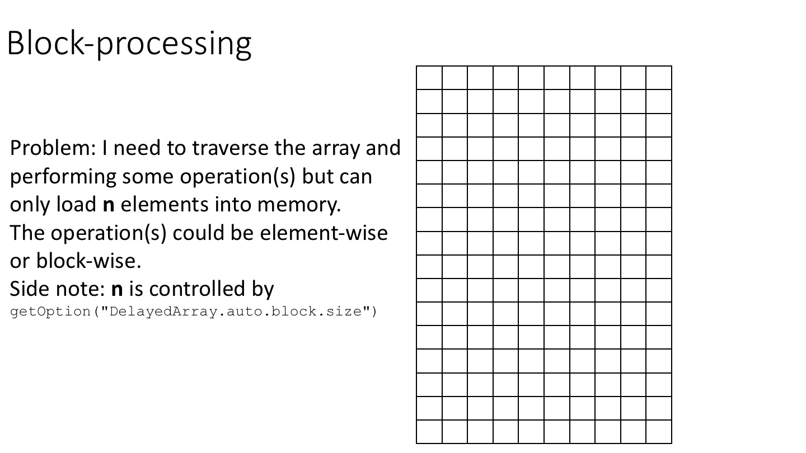
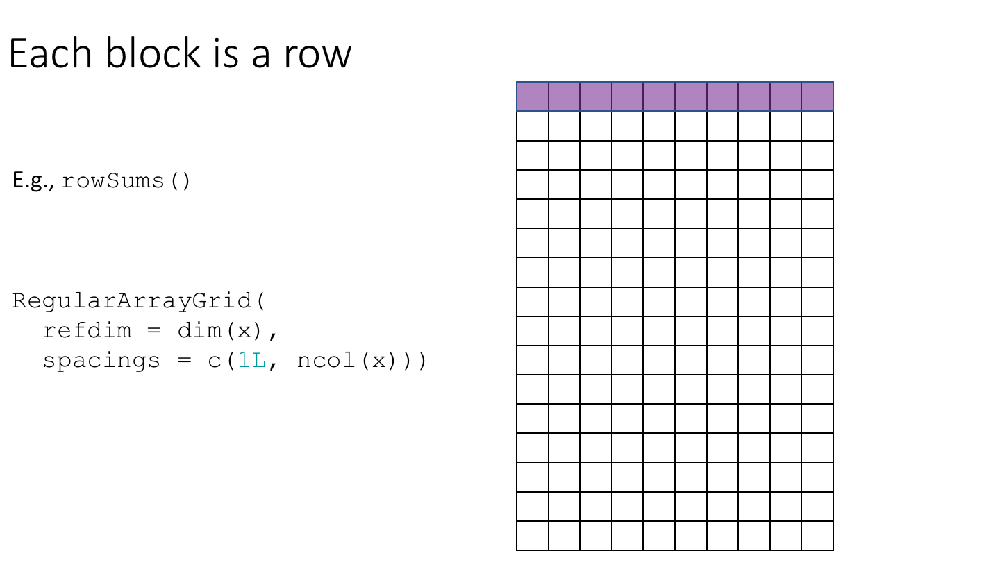
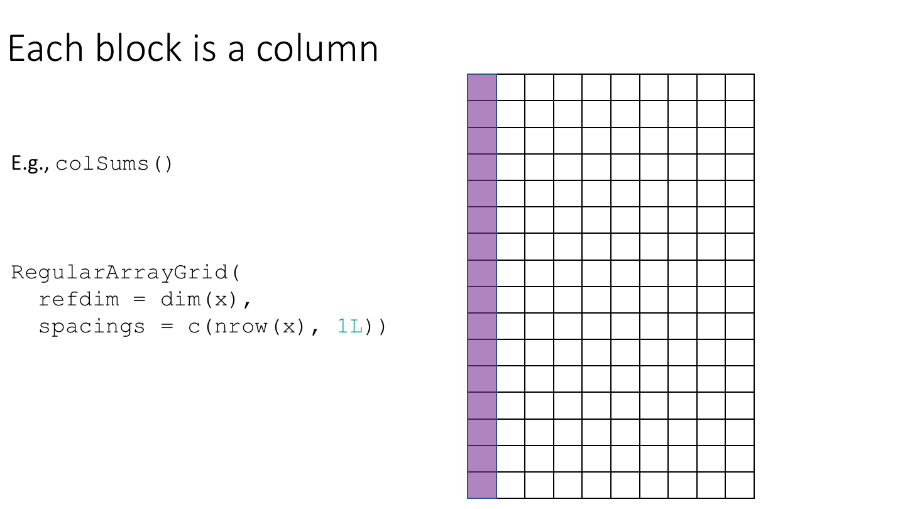
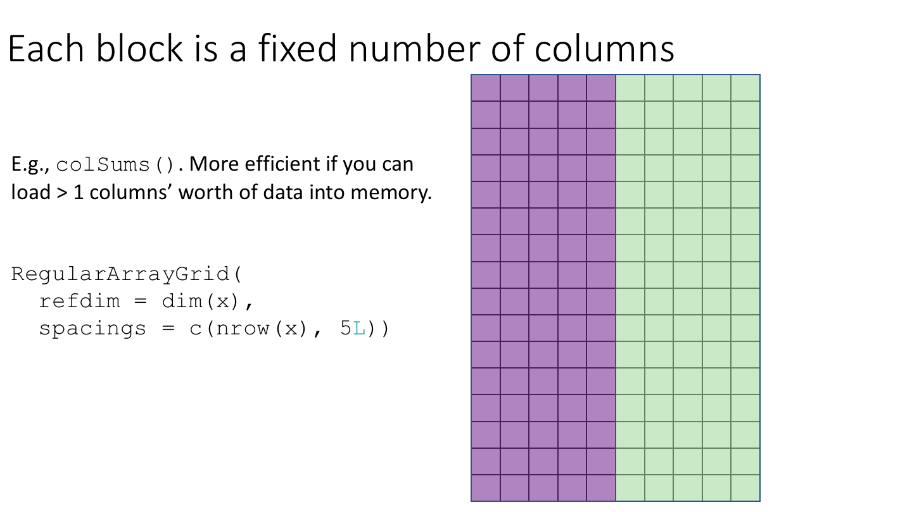
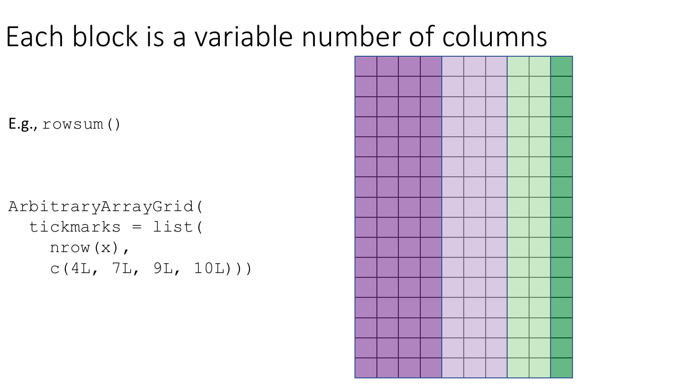
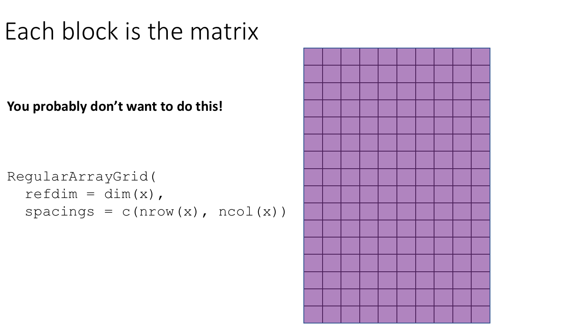
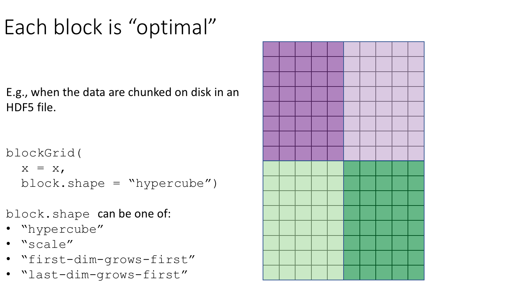

Effectively using the DelayedArray framework as a user to support the analysis of large datasets
Presented at BioC 2020 (27-31 July)
Peter Hickey
Last modified: July 14, 2020; Compiled: July 28, 2020
Effectively_using_the_DelayedArray_framework_for_users.RmdWorkshop description
This workshop gives an introductory overview of the DelayedArray framework, which can be used by R / Bioconductor packages to support the analysis of large array-like datasets. A DelayedArray is like an ordinary array in R, but allows for the data to be in-memory, on-disk in a file, or even hosted on a remote server.
Workshop participants will learn where they might encounter a DelayedArray in the wild while using Bioconductor and help them understand the fundamental concepts underlying the framework. This workshop will feature introductory material, ‘live’ coding, and Q&A.
Pre-requisites
- Basic knowledge of R syntax.
- Familiarity with common operations on matrices in R, such as
colSums()andcolMeans(). - Some familiarity with S4 objects may be helpful but is not required.
Workshop Participation
Students will be able to run code examples from the workshop material. There will be a Q&A session in the second half of the workshop.
R / Bioconductor packages used
These packages are the focus of this workshop:
Please see the workshop DESCRIPTION for a full list of dependencies.
TODO: Check for any other packages with extensive usage.
Time outline
| Activity | Time |
|---|---|
| Introductory material | 5 min |
| First contact | 20 min |
| Workflow tips for DelayedArray-backed analyses | 15 min |
| Q&A | 15 min |
Workshop goals and objectives
Learning goals
- Learn of existing packages and functions that use the DelayedArray framework.
- Develop a high-level understanding of classes and packages that implement the DelayedArray framework.
- Become familiar with the fundamental concepts of delayed operations, block-processing, and realization.
- Reason about potential bottlenecks, and how to avoid or reduce these, in algorithms operating on DelayedArray objects.
Learning objectives
- Identify when an object is a DelayedArray or one of its derivatives.
- Be able to recognise when it is useful to use a DelayedArray instead of an ordinary array or other array-like data structure.
- Learn how to load and save a DelayedArray-backed object.
- Learn how the ‘block size’ and ‘chunking’ of the dataset affect performance when operating on DelayedArray objects.
- Take away some miscellaneous tips and tricks I’ve learnt over the years when working with DelayedArray-backed objects.
Introductory material
TODO: Make this material into slides?
Data from a high-throughput biological assay, such as single-cell RNA-sequencing (scRNA-seq), will often be summarised as a matrix of counts, where rows correspond to features and columns to samples1. Within Bioconductor, the SummarizedExperiment class is the recommended container for such data, offering a rich interface that tightly links assay measurements to data on the features and the samples.
The SummarizedExperiment class is used to store rectangular arrays of experimental results (assays). Here, each assay is drawn as a matrix but higher-dimensional arrays are also supported.

Traditionally, the assay data are stored in-memory as an ordinary array object2. Storing the data in-memory becomes a real pain with the ever-growing size of ’omics datasets. It is now not uncommon to collect \(10,000-100,000,000\) measurements on \(100 - 1,000,000\) samples, which would occupy \(10-1,000\) gigabytes (Gb) if stored in-memory as ordinary R arrays.
The DelayedArray framework offers a solution to this problem. Wrapping an array-like object (typically an on-disk object) in a DelayedArray object allows one to perform common array operations on it without loading the object in memory. In order to reduce memory usage and optimize performance, operations on the object are either delayed or executed using a block processing mechanism.
Projects enabled by DelayedArray
The DelayedArray framework enables the analysis of datasets that are too large to be stored or processed in-memory. This has become particularly relevant with the advent of large single-cell RNA-sequencing (scRNA-seq) studies containing tens of thousands to millions of cells.
In my own research I have made extensive use of the DelayedArray framework when analysing whole genome bisulfite sequencing (WGBS) datasets. To give a recent example, we profiled 45 human brain samples using WGBS to measure DNA methylation (Rizzardi et al. 2019). For most tissues, we focus on so-called so-called CpG methylation, which requires analysing matrices with roughly 20 million rows (CpG loci) and 45 columns (samples). This sized data is challenging, but well within the realms of high performance computing available at a modern research institute. However, the brain also has extensive non-CpG methylation and there are an order of magnitude more non-CpG loci. This necessitated extensive re-factoring of our software tools and we successfully adopted the DelayedArray framework to enable this research.
First contact
The heart of the DelayedArray framework is implemented in the DelayedArray package, which we now load and attach.
library(DelayedArray) #> Loading required package: stats4 #> Loading required package: Matrix #> Loading required package: matrixStats #> Loading required package: BiocGenerics #> Loading required package: parallel #> #> Attaching package: 'BiocGenerics' #> The following objects are masked from 'package:parallel': #> #> clusterApply, clusterApplyLB, clusterCall, clusterEvalQ, #> clusterExport, clusterMap, parApply, parCapply, parLapply, #> parLapplyLB, parRapply, parSapply, parSapplyLB #> The following objects are masked from 'package:stats': #> #> IQR, mad, sd, var, xtabs #> The following objects are masked from 'package:base': #> #> anyDuplicated, append, as.data.frame, basename, cbind, colnames, #> dirname, do.call, duplicated, eval, evalq, Filter, Find, get, grep, #> grepl, intersect, is.unsorted, lapply, Map, mapply, match, mget, #> order, paste, pmax, pmax.int, pmin, pmin.int, Position, rank, #> rbind, Reduce, rownames, sapply, setdiff, sort, table, tapply, #> union, unique, unsplit, which.max, which.min #> Loading required package: S4Vectors #> #> Attaching package: 'S4Vectors' #> The following object is masked from 'package:Matrix': #> #> expand #> The following object is masked from 'package:base': #> #> expand.grid #> Loading required package: IRanges #> #> Attaching package: 'DelayedArray' #> The following objects are masked from 'package:matrixStats': #> #> colMaxs, colMins, colRanges, rowMaxs, rowMins, rowRanges #> The following objects are masked from 'package:base': #> #> aperm, apply, rowsum
We’ll also load and attach the HDF5Array package, which extends the DelayedArray framework to support on-disk HDF5 files.
library(HDF5Array) #> Loading required package: rhdf5
We will begin with an example using some scRNA-seq data on 1.3 million brain cells from embryonic mice, generated by 10X Genomics. This dataset is available from ExperimentHub3.
library(ExperimentHub) #> Loading required package: AnnotationHub #> Loading required package: BiocFileCache #> Loading required package: dbplyr hub <- ExperimentHub() #> using temporary cache /tmp/Rtmpdaoq59/BiocFileCache #> snapshotDate(): 2020-07-10 # Query ExperimentHub to find the relevant resource. # This dataset is available in two formats: a 'dense matrix' format and a # 'HDF5-based 10X Genomics' format. We'll use the 'dense matrix' version for # this workshop. query(hub, "TENxBrainData") #> ExperimentHub with 8 records #> # snapshotDate(): 2020-07-10 #> # $dataprovider: 10X Genomics #> # $species: Mus musculus #> # $rdataclass: character #> # additional mcols(): taxonomyid, genome, description, #> # coordinate_1_based, maintainer, rdatadateadded, preparerclass, tags, #> # rdatapath, sourceurl, sourcetype #> # retrieve records with, e.g., 'object[["EH1039"]]' #> #> title #> EH1039 | Brain scRNA-seq data, 'HDF5-based 10X Genomics' format #> EH1040 | Brain scRNA-seq data, 'dense matrix' format #> EH1041 | Brain scRNA-seq data, sample (column) annotation #> EH1042 | Brain scRNA-seq data, gene (row) annotation #> EH1689 | Brain scRNA-seq data 20k subset, 'HDF5-based 10x Genomics' format #> EH1690 | Brain scRNA-seq data 20k subset, 'dense matrix' format #> EH1691 | Brain scRNA-seq data 20k subset, sample (column) annotation #> EH1692 | Brain scRNA-seq data 20k subset, gene (row) annotation # Load the relevant resource. # This will download the data and may take a little while on the first run. # The result will be cached, however, so subsequent runs avoid re-downloading # the data. fname <- hub[["EH1040"]] #> Bioconductor version 3.12 (BiocManager 1.30.10), R 4.0.0 (2020-04-24) #> Installing package(s) 'TENxBrainData' #> Old packages: 'boot', 'class', 'foreign', 'KernSmooth', 'MASS', 'nlme', 'nnet', #> 'spatial' #> see ?TENxBrainData and browseVignettes('TENxBrainData') for documentation #> downloading 1 resources #> retrieving 1 resource #> loading from cache # The structure of this HDF5 file can be seen using the h5ls() command # from the rhdf5 package: library(rhdf5) h5ls(fname) #> group name otype dclass dim #> 0 / counts H5I_DATASET INTEGER 27998 x 1306127 # The 1.3 Million Brain Cell Dataset is represented by the "counts" group. # We point the HDF5Array() constructor to this group to create a HDF5Matrix # object representing the dataset: tenx <- HDF5Array(filepath = fname, name = "counts") # The data contain counts on nearly 28,000 gene for more than # 1.3 million cells. dim(tenx) #> [1] 27998 1306127
With data from 1.3 million cells, this is roughly 100,000-times more samples than a typical bulk RNA-seq dataset and would require over 140 GB of RAM to hold as a matrix and around 30 GB as a sparse matrix.
With so much data, we might expect that it would feel sluggish to interact with this object, but this is not the case. For example, let’s do something that would ordinarily be a terrible idea, and something that’s frustrated me way too many times: let’s ‘accidentally’ print out the entire counts matrix.
tenx #> <27998 x 1306127> matrix of class HDF5Matrix and type "integer": #> [,1] [,2] [,3] [,4] ... [,1306124] [,1306125] #> [1,] 0 0 0 0 . 0 0 #> [2,] 0 0 0 0 . 0 0 #> [3,] 0 0 0 0 . 0 0 #> [4,] 0 0 0 0 . 0 0 #> [5,] 0 0 0 0 . 0 0 #> ... . . . . . . . #> [27994,] 0 0 0 0 . 0 0 #> [27995,] 1 0 0 2 . 0 1 #> [27996,] 0 0 0 0 . 0 0 #> [27997,] 0 0 0 0 . 0 0 #> [27998,] 0 0 0 0 . 0 0 #> [,1306126] [,1306127] #> [1,] 0 0 #> [2,] 0 0 #> [3,] 0 0 #> [4,] 0 0 #> [5,] 0 0 #> ... . . #> [27994,] 0 0 #> [27995,] 0 0 #> [27996,] 0 0 #> [27997,] 0 0 #> [27998,] 0 0
Hallelujah! Unlike what you may have experienced when printing out a large matrix, this didn’t overwhelm the screen with thousands of lines of output nor did it cause the R session to hang indefinitely. In fact, this gives us a rather pretty printing of the counts matrix4. No need for panicked mashing of Ctrl-c or Esc.
We can now clearly see that tenx is no ordinary matrix. In fact, it is an HDF5Matrix, which is a type of DelayedArray5.
class(tenx) #> [1] "HDF5Matrix" #> attr(,"package") #> [1] "HDF5Array" is(tenx, "DelayedArray") #> [1] TRUE
The data contained in an HDF5Matrix is actually stored on disk in a Hierarchical Data Format (HDF5) file. Consequently, the tenx object takes up relatively little space in memory6.
print(object.size(tenx), units = "auto") #> 2.3 Kb
We can learn more about the internals of the tenx object using the seed() function.
seed(tenx) #> An object of class "HDF5ArraySeed" #> Slot "filepath": #> [1] "/tmp/Rtmpdaoq59/BiocFileCache/ce5015fe8fb0_1040" #> #> Slot "name": #> [1] "counts" #> #> Slot "type": #> [1] NA #> #> Slot "dim": #> [1] 27998 1306127 #> #> Slot "chunkdim": #> [1] 100 100 #> #> Slot "first_val": #> [1] 0
Three examples of computing on a DelayedArray
We will now play around with computing on the counts matrix. To make things slightly easier, we will first subset the data to 1000 samples.
tenx_subset <- tenx[, 1:1000]
Library sizes
Firstly, let’s compute the library sizes for this subset of samples. We can do this using colSums().
Proportion of cells with non-zero expression for each gene
Secondly, suppose we want to know for each gene the proportion of cells with non-zero expression. We can do this using rowSums() in conjunction with some standard R commands (logical comparisons and division).
Median expression of each gene
Finally, suppose we want to know the median expression of each gene. Here, we will quantify expression as counts per million (CPM) using library size normalization.
cpm <- t(t(1e6 * tenx_subset) / lib_sizes) cpm #> <27998 x 1000> matrix of class DelayedMatrix and type "double": #> [,1] [,2] [,3] ... [,999] [,1000] #> [1,] 0 0 0 . 0 0 #> [2,] 0 0 0 . 0 0 #> [3,] 0 0 0 . 0 0 #> [4,] 0 0 0 . 0 0 #> [5,] 0 0 0 . 0 0 #> ... . . . . . . #> [27994,] 0.0000 0.0000 0.0000 . 0.0000 0.0000 #> [27995,] 247.1577 0.0000 0.0000 . 277.1619 0.0000 #> [27996,] 0.0000 0.0000 0.0000 . 0.0000 0.0000 #> [27997,] 0.0000 0.0000 0.0000 . 0.0000 0.0000 #> [27998,] 0.0000 0.0000 0.0000 . 0.0000 0.0000
We can then compute the median expression of each gene using DelayedMatrixStats::rowMedians().
library(DelayedMatrixStats) #> #> Attaching package: 'DelayedMatrixStats' #> The following object is masked from 'package:Biobase': #> #> rowMedians #> The following objects are masked from 'package:matrixStats': #> #> colAlls, colAnyMissings, colAnyNAs, colAnys, colAvgsPerRowSet, #> colCollapse, colCounts, colCummaxs, colCummins, colCumprods, #> colCumsums, colDiffs, colIQRDiffs, colIQRs, colLogSumExps, #> colMadDiffs, colMads, colMeans2, colMedians, colOrderStats, #> colProds, colQuantiles, colRanks, colSdDiffs, colSds, colSums2, #> colTabulates, colVarDiffs, colVars, colWeightedMads, #> colWeightedMeans, colWeightedMedians, colWeightedSds, #> colWeightedVars, rowAlls, rowAnyMissings, rowAnyNAs, rowAnys, #> rowAvgsPerColSet, rowCollapse, rowCounts, rowCummaxs, rowCummins, #> rowCumprods, rowCumsums, rowDiffs, rowIQRDiffs, rowIQRs, #> rowLogSumExps, rowMadDiffs, rowMads, rowMeans2, rowMedians, #> rowOrderStats, rowProds, rowQuantiles, rowRanks, rowSdDiffs, #> rowSds, rowSums2, rowTabulates, rowVarDiffs, rowVars, #> rowWeightedMads, rowWeightedMeans, rowWeightedMedians, #> rowWeightedSds, rowWeightedVars median_expression <- rowMedians(cpm) summary(median_expression) #> Min. 1st Qu. Median Mean 3rd Qu. Max. #> 0.00 0.00 0.00 18.73 0.00 22069.23
Summary
These 3 examples highlight the power of the DelayedArray framework. Recall that the data in these examples live on disk in an HDF5 file, yet we interacted with tenx_subset and computed on it much as we would if the data were in-memory as an ordinary matrix. Also note that all 3 examples returned ordinary R vectors.
class(lib_sizes) #> [1] "numeric" class(prop_non_zero) #> [1] "numeric" class(median_expression) #> [1] "numeric"
To do so, we made (implicit) use of the three fundamental concepts of the DelayedArray framework:
- Delayed operations
- Block-processing
- Realization
We’ll now discuss each of these in turn.
Delayed operations
Taking a careful look at tenx_subset, we see that it is a DelayedMatrix rather than an HDF5Matrix.
tenx_subset #> <27998 x 1000> matrix of class DelayedMatrix and type "integer": #> [,1] [,2] [,3] [,4] ... [,997] [,998] [,999] [,1000] #> [1,] 0 0 0 0 . 0 0 0 0 #> [2,] 0 0 0 0 . 0 0 0 0 #> [3,] 0 0 0 0 . 0 0 0 0 #> [4,] 0 0 0 0 . 0 0 0 0 #> [5,] 0 0 0 0 . 0 0 0 0 #> ... . . . . . . . . . #> [27994,] 0 0 0 0 . 0 0 0 0 #> [27995,] 1 0 0 2 . 5 3 2 0 #> [27996,] 0 0 0 0 . 0 0 0 0 #> [27997,] 0 0 0 0 . 0 0 0 0 #> [27998,] 0 0 0 0 . 0 0 0 0
The subsetting operation has ‘degraded’ the tenx_subset object to a DelayedMatrix.
is(tenx_subset, "HDF5Matrix") #> [1] FALSE is(tenx_subset, "DelayedMatrix") #> [1] TRUE
The showtree() function can help us see what changed when we subsetted the data.
showtree(tenx) #> 27998x1306127 integer: HDF5Matrix object #> └─ 27998x1306127 integer: [seed] HDF5ArraySeed object showtree(tenx_subset) #> 27998x1000 integer: DelayedMatrix object #> └─ 27998x1000 integer: Subset #> └─ 27998x1306127 integer: [seed] HDF5ArraySeed object
The subsetting operation has been registered in what is termed a ‘delayed operation’. Registering a delayed operation does not modify the underlying data. Instead, the operation is recorded and only performed when the DelayedArray object is ‘realized’. Realization of a DelayedArray triggers the execution of the delayed operations carried by the object and returns the result as an ordinary array.
This allows us to chain together multiple operations and only perform them as required. Here is a contrived example.
# Add 1 to every element (a delayed op). x <- tenx_subset + 1L showtree(x) #> 27998x1000 integer: DelayedMatrix object #> └─ 27998x1000 integer: Unary iso op stack #> └─ 27998x1000 integer: Subset #> └─ 27998x1306127 integer: [seed] HDF5ArraySeed object # Compute log of every element (another delayed op). # TODO: Demostrate that this preserves sparsity? lx <- log(x) showtree(lx) #> 27998x1000 double: DelayedMatrix object #> └─ 27998x1000 double: Unary iso op stack #> └─ 27998x1000 integer: Subset #> └─ 27998x1306127 integer: [seed] HDF5ArraySeed object # Transpose the result (another delayed op). tlx <- t(lx) showtree(tlx) #> 1000x27998 double: DelayedMatrix object #> └─ 1000x27998 double: Unary iso op stack #> └─ 1000x27998 integer: Aperm (perm=c(2,1)) #> └─ 27998x1000 integer: Subset #> └─ 27998x1306127 integer: [seed] HDF5ArraySeed object # Realize a subset of the data as an ordinary matrix. as.array(tlx[1:5, 1:10]) #> [,1] [,2] [,3] [,4] [,5] [,6] [,7] [,8] [,9] [,10] #> [1,] 0 0 0 0 0 0 0 0.000000 0.0000000 0 #> [2,] 0 0 0 0 0 0 0 0.000000 0.0000000 0 #> [3,] 0 0 0 0 0 0 0 0.000000 0.6931472 0 #> [4,] 0 0 0 0 0 0 0 0.000000 0.0000000 0 #> [5,] 0 0 0 0 0 0 0 1.098612 0.6931472 0
TODO: Note that delayed ops are sparsity preserving.
Many common operations can be registered as delayed operations. Here are some examples7. Notice that in each case the result is ‘degraded’ to a DelayedMatrix8.
DelayedSubset
val <- tenx[, 1:100] val #> <27998 x 100> matrix of class DelayedMatrix and type "integer": #> [,1] [,2] [,3] [,4] ... [,97] [,98] [,99] [,100] #> [1,] 0 0 0 0 . 0 0 1 0 #> [2,] 0 0 0 0 . 0 0 0 0 #> [3,] 0 0 0 0 . 0 0 0 0 #> [4,] 0 0 0 0 . 0 0 0 0 #> [5,] 0 0 0 0 . 0 0 0 0 #> ... . . . . . . . . . #> [27994,] 0 0 0 0 . 0 0 0 0 #> [27995,] 1 0 0 2 . 0 1 2 0 #> [27996,] 0 0 0 0 . 0 0 0 0 #> [27997,] 0 0 0 0 . 0 0 0 0 #> [27998,] 0 0 0 0 . 0 0 0 0 showtree(val) #> 27998x100 integer: DelayedMatrix object #> └─ 27998x100 integer: Subset #> └─ 27998x1306127 integer: [seed] HDF5ArraySeed object
DelayedAperm
val <- t(tenx) val #> <1306127 x 27998> matrix of class DelayedMatrix and type "integer": #> [,1] [,2] [,3] [,4] ... [,27995] [,27996] [,27997] #> [1,] 0 0 0 0 . 1 0 0 #> [2,] 0 0 0 0 . 0 0 0 #> [3,] 0 0 0 0 . 0 0 0 #> [4,] 0 0 0 0 . 2 0 0 #> [5,] 0 0 0 0 . 2 0 0 #> ... . . . . . . . . #> [1306123,] 0 0 0 0 . 0 2 0 #> [1306124,] 0 0 0 0 . 0 0 0 #> [1306125,] 0 0 0 0 . 1 0 0 #> [1306126,] 0 0 0 0 . 0 0 0 #> [1306127,] 0 0 0 0 . 0 0 0 #> [,27998] #> [1,] 0 #> [2,] 0 #> [3,] 0 #> [4,] 0 #> [5,] 0 #> ... . #> [1306123,] 0 #> [1306124,] 0 #> [1306125,] 0 #> [1306126,] 0 #> [1306127,] 0 showtree(val) #> 1306127x27998 integer: DelayedMatrix object #> └─ 1306127x27998 integer: Aperm (perm=c(2,1)) #> └─ 27998x1306127 integer: [seed] HDF5ArraySeed object
DelayedUnaryIsoOp
val <- tenx + 1L val #> <27998 x 1306127> matrix of class DelayedMatrix and type "integer": #> [,1] [,2] [,3] [,4] ... [,1306124] [,1306125] #> [1,] 1 1 1 1 . 1 1 #> [2,] 1 1 1 1 . 1 1 #> [3,] 1 1 1 1 . 1 1 #> [4,] 1 1 1 1 . 1 1 #> [5,] 1 1 1 1 . 1 1 #> ... . . . . . . . #> [27994,] 1 1 1 1 . 1 1 #> [27995,] 2 1 1 3 . 1 2 #> [27996,] 1 1 1 1 . 1 1 #> [27997,] 1 1 1 1 . 1 1 #> [27998,] 1 1 1 1 . 1 1 #> [,1306126] [,1306127] #> [1,] 1 1 #> [2,] 1 1 #> [3,] 1 1 #> [4,] 1 1 #> [5,] 1 1 #> ... . . #> [27994,] 1 1 #> [27995,] 1 1 #> [27996,] 1 1 #> [27997,] 1 1 #> [27998,] 1 1 showtree(val) #> 27998x1306127 integer: DelayedMatrix object #> └─ 27998x1306127 integer: Unary iso op stack #> └─ 27998x1306127 integer: [seed] HDF5ArraySeed object val <- tenx + 1:2 val #> <27998 x 1306127> matrix of class DelayedMatrix and type "integer": #> [,1] [,2] [,3] [,4] ... [,1306124] [,1306125] #> [1,] 1 1 1 1 . 1 1 #> [2,] 2 2 2 2 . 2 2 #> [3,] 1 1 1 1 . 1 1 #> [4,] 2 2 2 2 . 2 2 #> [5,] 1 1 1 1 . 1 1 #> ... . . . . . . . #> [27994,] 2 2 2 2 . 2 2 #> [27995,] 2 1 1 3 . 1 2 #> [27996,] 2 2 2 2 . 2 2 #> [27997,] 1 1 1 1 . 1 1 #> [27998,] 2 2 2 2 . 2 2 #> [,1306126] [,1306127] #> [1,] 1 1 #> [2,] 2 2 #> [3,] 1 1 #> [4,] 2 2 #> [5,] 1 1 #> ... . . #> [27994,] 2 2 #> [27995,] 1 1 #> [27996,] 2 2 #> [27997,] 1 1 #> [27998,] 2 2 showtree(val) #> 27998x1306127 integer: DelayedMatrix object #> └─ 27998x1306127 integer: Unary iso op with args #> └─ 27998x1306127 integer: [seed] HDF5ArraySeed object
DelayedSubassign
tmp <- tenx tmp[, 1] <- 100 tmp #> <27998 x 1306127> matrix of class DelayedMatrix and type "double": #> [,1] [,2] [,3] ... [,1306126] [,1306127] #> [1,] 100 0 0 . 0 0 #> [2,] 100 0 0 . 0 0 #> [3,] 100 0 0 . 0 0 #> [4,] 100 0 0 . 0 0 #> [5,] 100 0 0 . 0 0 #> ... . . . . . . #> [27994,] 100 0 0 . 0 0 #> [27995,] 100 0 0 . 0 0 #> [27996,] 100 0 0 . 0 0 #> [27997,] 100 0 0 . 0 0 #> [27998,] 100 0 0 . 0 0 showtree(tmp) #> 27998x1306127 double: DelayedMatrix object #> └─ 27998x1306127 double: Subassign #> └─ 27998x1306127 integer: [seed] HDF5ArraySeed object
WARNING: Be careful with delayed subassignment because you can end up with objects that are surprisingly large in-memory. This is because the subassigned values are kept in-memory until the data are realized.
DelayedDimnames
tmp <- tenx rownames(tmp) <- paste0("R", seq_len(nrow(tmp))) tmp #> <27998 x 1306127> matrix of class DelayedMatrix and type "integer": #> [,1] [,2] [,3] [,4] ... [,1306124] [,1306125] #> R1 0 0 0 0 . 0 0 #> R2 0 0 0 0 . 0 0 #> R3 0 0 0 0 . 0 0 #> R4 0 0 0 0 . 0 0 #> R5 0 0 0 0 . 0 0 #> ... . . . . . . . #> R27994 0 0 0 0 . 0 0 #> R27995 1 0 0 2 . 0 1 #> R27996 0 0 0 0 . 0 0 #> R27997 0 0 0 0 . 0 0 #> R27998 0 0 0 0 . 0 0 #> [,1306126] [,1306127] #> R1 0 0 #> R2 0 0 #> R3 0 0 #> R4 0 0 #> R5 0 0 #> ... . . #> R27994 0 0 #> R27995 0 0 #> R27996 0 0 #> R27997 0 0 #> R27998 0 0 showtree(tmp) #> 27998x1306127 integer: DelayedMatrix object #> └─ 27998x1306127 integer: Set dimnames #> └─ 27998x1306127 integer: [seed] HDF5ArraySeed object
DelayedNaryIsoOp
val <- tenx + tenx val #> <27998 x 1306127> matrix of class DelayedMatrix and type "integer": #> [,1] [,2] [,3] [,4] ... [,1306124] [,1306125] #> [1,] 0 0 0 0 . 0 0 #> [2,] 0 0 0 0 . 0 0 #> [3,] 0 0 0 0 . 0 0 #> [4,] 0 0 0 0 . 0 0 #> [5,] 0 0 0 0 . 0 0 #> ... . . . . . . . #> [27994,] 0 0 0 0 . 0 0 #> [27995,] 2 0 0 4 . 0 2 #> [27996,] 0 0 0 0 . 0 0 #> [27997,] 0 0 0 0 . 0 0 #> [27998,] 0 0 0 0 . 0 0 #> [,1306126] [,1306127] #> [1,] 0 0 #> [2,] 0 0 #> [3,] 0 0 #> [4,] 0 0 #> [5,] 0 0 #> ... . . #> [27994,] 0 0 #> [27995,] 0 0 #> [27996,] 0 0 #> [27997,] 0 0 #> [27998,] 0 0 showtree(val) #> 27998x1306127 integer: DelayedMatrix object #> └─ 27998x1306127 integer: N-ary iso op #> ├─ 27998x1306127 integer: [seed] HDF5ArraySeed object #> └─ 27998x1306127 integer: [seed] HDF5ArraySeed object
DelayedAbind
val <- cbind(tenx, tenx) val #> <27998 x 2612254> matrix of class DelayedMatrix and type "integer": #> [,1] [,2] [,3] [,4] ... [,2612251] [,2612252] #> [1,] 0 0 0 0 . 0 0 #> [2,] 0 0 0 0 . 0 0 #> [3,] 0 0 0 0 . 0 0 #> [4,] 0 0 0 0 . 0 0 #> [5,] 0 0 0 0 . 0 0 #> ... . . . . . . . #> [27994,] 0 0 0 0 . 0 0 #> [27995,] 1 0 0 2 . 0 1 #> [27996,] 0 0 0 0 . 0 0 #> [27997,] 0 0 0 0 . 0 0 #> [27998,] 0 0 0 0 . 0 0 #> [,2612253] [,2612254] #> [1,] 0 0 #> [2,] 0 0 #> [3,] 0 0 #> [4,] 0 0 #> [5,] 0 0 #> ... . . #> [27994,] 0 0 #> [27995,] 0 0 #> [27996,] 0 0 #> [27997,] 0 0 #> [27998,] 0 0 showtree(val) #> 27998x2612254 integer: DelayedMatrix object #> └─ 27998x2612254 integer: Abind (along=2) #> ├─ 27998x1306127 integer: [seed] HDF5ArraySeed object #> └─ 27998x1306127 integer: [seed] HDF5ArraySeed object
No-op
The DelayedArray framework is smart enough to recognise that some combinations of operations are ‘no-ops’.
val <- t(t(tenx)) val #> <27998 x 1306127> matrix of class HDF5Matrix and type "integer": #> [,1] [,2] [,3] [,4] ... [,1306124] [,1306125] #> [1,] 0 0 0 0 . 0 0 #> [2,] 0 0 0 0 . 0 0 #> [3,] 0 0 0 0 . 0 0 #> [4,] 0 0 0 0 . 0 0 #> [5,] 0 0 0 0 . 0 0 #> ... . . . . . . . #> [27994,] 0 0 0 0 . 0 0 #> [27995,] 1 0 0 2 . 0 1 #> [27996,] 0 0 0 0 . 0 0 #> [27997,] 0 0 0 0 . 0 0 #> [27998,] 0 0 0 0 . 0 0 #> [,1306126] [,1306127] #> [1,] 0 0 #> [2,] 0 0 #> [3,] 0 0 #> [4,] 0 0 #> [5,] 0 0 #> ... . . #> [27994,] 0 0 #> [27995,] 0 0 #> [27996,] 0 0 #> [27997,] 0 0 #> [27998,] 0 0 showtree(val) #> 27998x1306127 integer: HDF5Matrix object #> └─ 27998x1306127 integer: [seed] HDF5ArraySeed object
But it can be fooled.
# This is a no-op but DelayedArray doesn't recognise it as one. val <- tenx + 0L val #> <27998 x 1306127> matrix of class DelayedMatrix and type "integer": #> [,1] [,2] [,3] [,4] ... [,1306124] [,1306125] #> [1,] 0 0 0 0 . 0 0 #> [2,] 0 0 0 0 . 0 0 #> [3,] 0 0 0 0 . 0 0 #> [4,] 0 0 0 0 . 0 0 #> [5,] 0 0 0 0 . 0 0 #> ... . . . . . . . #> [27994,] 0 0 0 0 . 0 0 #> [27995,] 1 0 0 2 . 0 1 #> [27996,] 0 0 0 0 . 0 0 #> [27997,] 0 0 0 0 . 0 0 #> [27998,] 0 0 0 0 . 0 0 #> [,1306126] [,1306127] #> [1,] 0 0 #> [2,] 0 0 #> [3,] 0 0 #> [4,] 0 0 #> [5,] 0 0 #> ... . . #> [27994,] 0 0 #> [27995,] 0 0 #> [27996,] 0 0 #> [27997,] 0 0 #> [27998,] 0 0 showtree(val) #> 27998x1306127 integer: DelayedMatrix object #> └─ 27998x1306127 integer: Unary iso op stack #> └─ 27998x1306127 integer: [seed] HDF5ArraySeed object
Block-processing
In Library sizes, we needed to compute the column sums of tenx_subset, whose data live on disk in an HDF5 file. One way of achieving this would be to load the entire dataset into memory as an ordinary matrix and then run base::colSums()9.
lib_sizes_in_mem <- colSums(as.array(tenx_subset)) # Check we get the same result as before. identical(lib_sizes_in_mem, lib_sizes) #> [1] TRUE
The tenx_subset data are small enough to load into memory, but what if that’s not the case10? One way you might think to do this is to loop over the columns of the matrix, load that column into memory, and compute it’s sum11
lib_sizes_loop_over_cols <- vector("numeric", ncol(tenx_subset)) for (j in seq_len(ncol(tenx_subset))) { # A simple progress report. if (j %% 100 == 0) message("Processed ", j, "/", ncol(tenx_subset)) lib_sizes_loop_over_cols[j] <- colSums( as.array(tenx_subset[, j, drop = FALSE])) } #> Processed 100/1000 #> Processed 200/1000 #> Processed 300/1000 #> Processed 400/1000 #> Processed 500/1000 #> Processed 600/1000 #> Processed 700/1000 #> Processed 800/1000 #> Processed 900/1000 #> Processed 1000/1000 # Check we get the same result as before. # (We'll ignore the names of the result) all.equal(lib_sizes_loop_over_cols, lib_sizes, check.attributes = FALSE) #> [1] TRUE
But what if you can’t load even a single column into memory12? We might loop over the columns of the matrix, partition each column, load each partition, compute its sum, and then compute the sum of the partition sums.
# Here we will partition each column into two equal-sized subsets. lib_sizes_loop_over_cols_subset <- vector("numeric", ncol(tenx_subset)) tmp_colsums <- vector("numeric", 2) nr <- nrow(tenx_subset) for (j in seq_len(ncol(tenx_subset))) { # A simple progress report. if (j %% 100 == 0) message("Processed ", j, "/", ncol(tenx_subset)) for (i in 1:2) { i1 <- (i - 1) * nr / 2 + 1 i2 <- i * nr / 2 tmp_colsums[i] <- colSums( as.array(tenx_subset[seq(i1, i2), j, drop = FALSE])) } lib_sizes_loop_over_cols_subset[j] <- sum(tmp_colsums) } #> Processed 100/1000 #> Processed 200/1000 #> Processed 300/1000 #> Processed 400/1000 #> Processed 500/1000 #> Processed 600/1000 #> Processed 700/1000 #> Processed 800/1000 #> Processed 900/1000 #> Processed 1000/1000 # Check we get the same result as before. # (We'll ignore the names of the result) all.equal(lib_sizes_loop_over_cols, lib_sizes, check.attributes = FALSE) #> [1] TRUE
Hopefully you can now begin to see the general pattern, a strategy which the DelayedArray package calls ‘block-processing’:
- Load a ‘block’ of the data into memory.
- Compute a summary statistic.
- Combine the block-level statistics in an appropriate way to get the final result.
TODO: Demonstrate that this process has been abstracted away with rowGrid()/colGrid(),rowAutoGrid(), and colAutoGrid().
Block-processing illustrated
Some examples of block-processing are illustrated in the following figures:

Block-processed column sums
When we run colSums(tenx_subset) we are using a block-processed version of column sums, specifically the colSums,DelayedMatrix-method implemented in the DelayedArray package. We can see this more clearly by turning on verbose progress reporting from the DelayedArray package.
More examples of block-processed operations in DelayedArray
Some of the most useful functions in the DelayedArray package implement common operations on a DelayedMatrix using block-processing. These include the following row and column summarization methods:
rowSums()colSums()rowMeans()colMeans()rowMaxs()colMaxs()rowMins()colMins()rowRanges()colRanges()
Two useful but lesser known functions use block-processing to compute column/row sums of a DelayedMatrix based on a grouping variable:
Finally, matrix multiplication is implemented as a block-processed operation.
# This is mathematically equivalent to rowSums(tenx_subset). # TODO: Is this still using block-processing? tenx_subset %*% matrix(1, nrow = ncol(tenx_subset)) #> <27998 x 1> matrix of class DelayedMatrix and type "double": #> [,1] #> [1,] 18 #> [2,] 0 #> [3,] 0 #> [4,] 0 #> [5,] 0 #> ... . #> [27994,] 0 #> [27995,] 1122 #> [27996,] 93 #> [27997,] 0 #> [27998,] 1
DelayedMatrixStats
We’ve already seen the DelayedMatrixStats package in action back when computing the Median expression of each gene. DelayedMatrixStats is a port of the matrixStats package’s API for use with DelayedMatrix objects. It provides more than 70 functions that apply to rows and columns of DelayedMatrix objects.
TODO: Include overview of API from README.
General block-processing
As we have seen, many common block-processing operations on a DelayedMatrix have already been implemented in DelayedArray or are provided by DelayedMatrixStats. Nonetheless, there may be times you need to implement your own algorithm using block-processing. The documentation on this topic is a little sparse, but some details can be found in help("block_processing", "DelayedArray"), help("ArrayGrid", "DelayedArray"), help("blockApply", "DelayedArray"), and help("AutoGrid", "DelayedArray") or by reading the source code of the aforementioned packages. Briefly, to perform block-processing requires that you:
- Set up an ArrayGrid over your DelayedArray. This specifies the ‘block’ structure that will be traversed when processing the DelayedArray.
- Iterate over the DelayedArray via the ArrayGrid
- Read each block of data into memory as an ordinary array using
read_block(). TODO: Mention that sparse data can be read in as sparse array. - Compute the statistic for that block
- Read each block of data into memory as an ordinary array using
- Appropriately combine the block-level statistics to get your final result.
The blockApply() and blockReduce() functions can help facilitate steps 1-3 , even incorporating parallelization via the BiocParallel package.
Realization
To realize a DelayedArray object is to trigger execution of the delayed operations carried by the object and return the result as an ordinary array TODO: or as a sparse array. One way to achieve this is to call as.array() on it.
tenx_subset_realized <- as.array(tenx_subset) tenx_subset_realized[1:10, 1:10] #> [,1] [,2] [,3] [,4] [,5] [,6] [,7] [,8] [,9] [,10] #> [1,] 0 0 0 0 0 0 0 0 0 0 #> [2,] 0 0 0 0 0 0 0 0 0 0 #> [3,] 0 0 0 0 0 0 0 0 0 0 #> [4,] 0 0 0 0 0 0 0 0 0 0 #> [5,] 0 0 0 0 0 0 0 0 0 0 #> [6,] 0 0 0 0 0 0 0 0 0 0 #> [7,] 0 0 0 0 0 0 0 0 0 0 #> [8,] 0 0 0 0 2 0 2 0 1 1 #> [9,] 0 0 1 0 1 0 0 0 0 0 #> [10,] 0 0 0 0 0 0 0 0 0 0
However, this realizes the full object at once in memory which could require too much memory if the object is big13.
A large DelayedArray object is preferably realized on disk, which is most commonly an HDF5 file TODO: Or TileDB file.
TODO: as(tenx_subset, "dgCMatrix")
Realizing to an HDF5 file
Realizing to an HDF5 file requires that the HDF5Array package is installed14
tenx_subset_hdf5 <- writeHDF5Array(tenx_subset) #> Realizing block 1/2 ... OK, writing it ... OK #> Realizing block 2/2 ... OK, writing it ... OK tenx_subset_hdf5 #> <27998 x 1000> matrix of class HDF5Matrix and type "integer": #> [,1] [,2] [,3] [,4] ... [,997] [,998] [,999] [,1000] #> [1,] 0 0 0 0 . 0 0 0 0 #> [2,] 0 0 0 0 . 0 0 0 0 #> [3,] 0 0 0 0 . 0 0 0 0 #> [4,] 0 0 0 0 . 0 0 0 0 #> [5,] 0 0 0 0 . 0 0 0 0 #> ... . . . . . . . . . #> [27994,] 0 0 0 0 . 0 0 0 0 #> [27995,] 1 0 0 2 . 5 3 2 0 #> [27996,] 0 0 0 0 . 0 0 0 0 #> [27997,] 0 0 0 0 . 0 0 0 0 #> [27998,] 0 0 0 0 . 0 0 0 0 # Alternatively, we could 'coerce' the result to be an HDF5Array. as(tenx_subset, "HDF5Array") #> Realizing block 1/2 ... OK, writing it ... OK #> Realizing block 2/2 ... OK, writing it ... OK #> <27998 x 1000> matrix of class HDF5Matrix and type "integer": #> [,1] [,2] [,3] [,4] ... [,997] [,998] [,999] [,1000] #> [1,] 0 0 0 0 . 0 0 0 0 #> [2,] 0 0 0 0 . 0 0 0 0 #> [3,] 0 0 0 0 . 0 0 0 0 #> [4,] 0 0 0 0 . 0 0 0 0 #> [5,] 0 0 0 0 . 0 0 0 0 #> ... . . . . . . . . . #> [27994,] 0 0 0 0 . 0 0 0 0 #> [27995,] 1 0 0 2 . 5 3 2 0 #> [27996,] 0 0 0 0 . 0 0 0 0 #> [27997,] 0 0 0 0 . 0 0 0 0 #> [27998,] 0 0 0 0 . 0 0 0 0
Notice that this process of realization used block-processing, which avoids loading the entire dataset entire memory. Also notice that the result of realization is here returned as an HDF5Matrix, which no longer carries around the delayed operations.
class(tenx_subset) #> [1] "DelayedMatrix" #> attr(,"package") #> [1] "DelayedArray" class(tenx_subset_hdf5) #> [1] "HDF5Matrix" #> attr(,"package") #> [1] "HDF5Array" showtree(tenx_subset) #> 27998x1000 integer: DelayedMatrix object #> └─ 27998x1000 integer: Subset #> └─ 27998x1306127 integer: [seed] HDF5ArraySeed object showtree(tenx_subset_hdf5) #> 27998x1000 integer: HDF5Matrix object #> └─ 27998x1000 integer: [seed] HDF5ArraySeed object
Used like this, writeHDF5Array() and as(..., "HDF5Array") will write their results to a file in HDF5 dump directory, a dumping ground for automatically created HDF5 datasets. We can see a log of the operations that have written to the HDF5 dump directory using showHDF5DumpLog().
showHDF5DumpLog() #> [2020-07-28 01:44:51] #1 In file '/tmp/Rtmpdaoq59/HDF5Array_dump/auto00001.h5': creation of dataset '/HDF5ArrayAUTO00001' (27998x1000:integer, chunkdims=5291x188, level=6) #> [2020-07-28 01:44:54] #2 In file '/tmp/Rtmpdaoq59/HDF5Array_dump/auto00002.h5': creation of dataset '/HDF5ArrayAUTO00002' (27998x1000:integer, chunkdims=5291x188, level=6)
Often, however, we will want full control of where and how the data are written to the HDF5 file15 and the writeHDF5Array() function gives you full control over this and more.
# Write the data to a user-specified HDF5 file using maximum compression and # 'chunking' along the columns. my_hdf5_file <- tempfile(fileext = ".h5") tenx_subset_my_file_hdf5 <- writeHDF5Array( tenx_subset, filepath = my_hdf5_file, chunkdim = c(nrow(tenx_subset), 1), level = 9) #> Realizing block 1/2 ... OK, writing it ... OK #> Realizing block 2/2 ... OK, writing it ... OK # Compare `tenx_subset_hdf5` to `tenx_subset_my_file_hdf5` seed(tenx_subset_hdf5) #> An object of class "HDF5ArraySeed" #> Slot "filepath": #> [1] "/tmp/Rtmpdaoq59/HDF5Array_dump/auto00001.h5" #> #> Slot "name": #> [1] "/HDF5ArrayAUTO00001" #> #> Slot "type": #> [1] "integer" #> #> Slot "dim": #> [1] 27998 1000 #> #> Slot "chunkdim": #> [1] 5291 188 #> #> Slot "first_val": #> [1] 0 seed(tenx_subset_my_file_hdf5) #> An object of class "HDF5ArraySeed" #> Slot "filepath": #> [1] "/tmp/Rtmpdaoq59/filece50332c0685.h5" #> #> Slot "name": #> [1] "/HDF5ArrayAUTO00003" #> #> Slot "type": #> [1] "integer" #> #> Slot "dim": #> [1] 27998 1000 #> #> Slot "chunkdim": #> [1] 27998 1 #> #> Slot "first_val": #> [1] 0
Realization backends
We’ve now seen that we can realize to an HDF5 file. This is called as the HDF5Array ‘realization backend’ and is implemented in the HDF5Array package. There are a few other realization backends to be aware of.
supportedRealizationBackends() #> BACKEND package #> 1 RleArray DelayedArray #> 2 HDF5Array HDF5Array #> 3 TENxMatrix HDF5Array
There is also the NULL backend, which means the data are realized in memory as an ordinary array and then wrapped in a DelayedArray. This is the default realization backend upon loading/attaching the DelayedArray package.
getRealizationBackend() #> NULL
The default realization backend can be altered with setRealizationBackend().
setRealizationBackend("HDF5Array") getRealizationBackend() #> [1] "HDF5Array" setRealizationBackend(NULL) getRealizationBackend() #> NULL
It can be important to know what your current realization backend is because it will be used implicitly by some functions. For example, matrix multiplication that involves a DelayedMatrix uses the current realization backend.
setRealizationBackend("HDF5Array") tenx_subset %*% matrix(1, nrow = ncol(tenx_subset)) #> Realizing block 1/1 ... OK, writing it ... OK #> <27998 x 1> matrix of class HDF5Matrix and type "double": #> [,1] #> [1,] 18 #> [2,] 0 #> [3,] 0 #> [4,] 0 #> [5,] 0 #> ... . #> [27994,] 0 #> [27995,] 1122 #> [27996,] 93 #> [27997,] 0 #> [27998,] 1 setRealizationBackend(NULL) tenx_subset %*% matrix(1, nrow = ncol(tenx_subset)) #> <27998 x 1> matrix of class DelayedMatrix and type "double": #> [,1] #> [1,] 18 #> [2,] 0 #> [3,] 0 #> [4,] 0 #> [5,] 0 #> ... . #> [27994,] 0 #> [27995,] 1122 #> [27996,] 93 #> [27997,] 0 #> [27998,] 1
The realize() function
We’ve seen that we can realize to the HDF5Array backend using writeHDF5Array(tenx_subset) and as(tenx_subset, "HDF5Array"). A third way of realizing a DelayedArray to an HDF5 file is with the realize() function.
realize(tenx_subset, BACKEND = "HDF5Array") #> Realizing block 1/2 ... OK, writing it ... OK #> Realizing block 2/2 ... OK, writing it ... OK #> <27998 x 1000> matrix of class HDF5Matrix and type "integer": #> [,1] [,2] [,3] [,4] ... [,997] [,998] [,999] [,1000] #> [1,] 0 0 0 0 . 0 0 0 0 #> [2,] 0 0 0 0 . 0 0 0 0 #> [3,] 0 0 0 0 . 0 0 0 0 #> [4,] 0 0 0 0 . 0 0 0 0 #> [5,] 0 0 0 0 . 0 0 0 0 #> ... . . . . . . . . . #> [27994,] 0 0 0 0 . 0 0 0 0 #> [27995,] 1 0 0 2 . 5 3 2 0 #> [27996,] 0 0 0 0 . 0 0 0 0 #> [27997,] 0 0 0 0 . 0 0 0 0 #> [27998,] 0 0 0 0 . 0 0 0 0
So why might you use realize() instead of these other options? Because it allows us to easily switch out the realization backend and will defer to the current realization backend if none is supplied.
# Realize to the current realization backend. getRealizationBackend() #> NULL realize(tenx_subset) #> <27998 x 1000> matrix of class DelayedMatrix and type "integer": #> [,1] [,2] [,3] [,4] ... [,997] [,998] [,999] [,1000] #> [1,] 0 0 0 0 . 0 0 0 0 #> [2,] 0 0 0 0 . 0 0 0 0 #> [3,] 0 0 0 0 . 0 0 0 0 #> [4,] 0 0 0 0 . 0 0 0 0 #> [5,] 0 0 0 0 . 0 0 0 0 #> ... . . . . . . . . . #> [27994,] 0 0 0 0 . 0 0 0 0 #> [27995,] 1 0 0 2 . 5 3 2 0 #> [27996,] 0 0 0 0 . 0 0 0 0 #> [27997,] 0 0 0 0 . 0 0 0 0 #> [27998,] 0 0 0 0 . 0 0 0 0 # TODO: This example is broken. # # Realize as an RleArray. # setRealizationBackend("RleArray") # tenx_subset_rlearray <- realize(tenx_subset) # tenx_subset_rlearray # Switch back to the default backend. setRealizationBackend(NULL)
This is probably most useful when writing package code so that you can allow the user control over the realization backend.
Package ecosystem
TODO: Incorporate into intro intro slides?
The DelayedArray framework is, unsurprisingly, implemented in the DelayedArray package. However, there are several other key packages that are an important part of the broader ‘ecosystem’. More importantly, as a user of Bioconductor software, it is increasingly likely that you will encounter DelayedArray objects during a data analysis, especially if you are analysing single-cell data16. The following table lists packages that depend upon the DelayedArray package.
dep_tbl <- BiocPkgTools::buildPkgDependencyDataFrame() da_dep_tbl <- dep_tbl[dep_tbl$dependency == "DelayedArray", c("Package", "edgetype")] da_dep_tbl <- da_dep_tbl[with(da_dep_tbl, order(edgetype, Package)), ] colnames(da_dep_tbl) <- c("Package", "Dependency Type") rmarkdown::paged_table(da_dep_tbl)
We will briefly highlight some of the key packages in this table, broadly categorising these as ‘user-focused’/‘user-facing’ or ‘developer-focused’ packages and those that span the spectrum.
Packages that both users and developers should probably know about
DelayedArray
Well, duh. Implements the DelayedArray and RleArray classes, along with all the fundamentals the enable the delayed operations, block processing, and realization that underpin the DelayedArray framework.
HDF5Array
Implements the HDF5Array and TENxMatrix classes, two convenient and memory-efficient array-like containers for on-disk representation of HDF5 datasets. HDF5Array is for datasets that use the conventional (i.e. dense) HDF5 representation. TENxMatrix is for datasets that use the HDF5-based sparse matrix representation from 10x Genomics.
TileDBArray
Implements a DelayedArray backend for TileDB to read, write and store dense and sparse arrays. The resulting TileDBArray objects are directly compatible with any Bioconductor package that accepts DelayedArray objects, serving as a swap-in replacement for the predominant HDF5Array that is currently used throughout the Bioconductor ecosystem for representing large datasets.
NB: TileDBArray is not yet available from Bioconductor.
DelayedMatrixStats
A port of the matrixStats API for use with DelayedMatrix objects. High-performing functions operating on rows and columns of DelayedMatrix objects, e.g. col / rowMedians(), col / rowRanks(), and col / rowSds(). Functions optimized per data type and for subsetted calculations such that both memory usage and processing time is minimized.
Disclaimer: I wrote this one.
BiocSingular
Implements exact and approximate methods for singular value decomposition and principal components analysis using a framework that allows them to be easily switched within Bioconductor packages or workflows. These methods work on DelayedMatrix objects as well as ordinary matrix objects and some sparse matrix objects from the Matrix package.
TODO: Mention DeferredMatrix, LowRankMatrix, and ResidualMatrix.
VCFArray and GDSArray
Implements the VCFArray and GDSArray classes, types of DelayedArray, to represent VCF files and GDS-files in an array-like representation. VCF and GDS files are widely used to represent genotyping or sequence data.
rhdf5client and restfulSE
Provide functions and classes to interface with remote data stores by operating on SummarizedExperiment-like objects. These data are HDF5 files living on a remote server running h5serv, a REST-based service for HDF5 data.
User-focused/user-facing packages
These are the packages that as a user you might directly load/attach with library() as part of a data analysis. Alternatively, these may be loaded/attached as a dependency17 of another package you load/attach as part of an analysis.
DropletUtils
Provides a number of utility functions for handling single-cell (RNA-seq) data from droplet technologies such as 10X Genomics. This includes read10xCounts() for data loading from the count matrices produced by 10x Genomics’ CellRanger software, which may be stored in an HDF5 file. To do this, it makes use of the TENxMatrix class.
LoomExperiment
Provides a means to convert from ‘loom’ files to standard Bioconductor classes and back again. The Loom file format uses HDF5 to store experimental data and is used by some tools and labs producing data using single-cell assays. This includes the import() function for data loading from loom files into an HDF5Matrix.
scuttle
Provides basic utility functions for performing single-cell analyses, focusing on simple normalization, quality control and data transformations. Also provides some helper functions to assist development of other packages. These methods work on DelayedMatrix objects as well as ordinary matrix objects and some sparse matrix objects from the Matrix package.
batchelor
Implements a variety of methods for batch correction of single-cell (RNA sequencing) data, such as multiBatchPCA() and fastMNN(). These methods work on DelayedMatrix objects as well as ordinary matrix objects and some sparse matrix objects from the Matrix package.
bsseq
A collection of tools for analyzing and visualizing bisulfite sequencing data. This was one of the first packages to make use of the DelayedArray framework and it supports these throughout the package. This was needed in order to store and analyse large non-CpG methylation datasets (> 300 million loci, hundreds of samples) using HDF5 files.
Disclaimer: I did this re-write of bsseq and learnt a lot along the way.
minfi
Tools to analyze & visualize Illumina Infinium methylation arrays. This doesn’t have the same level of support for DelayedMatrix objects as bsseq, but perhaps one day. This is needed in order to store and analyse large methylation datasets (> 850,000 loci, tens of thousands of) using HDF5 files.
Disclaimer: This was the second package, after bsseq, I started to re-write to support the DelayedArray framework. Here, it is rather more difficult because it is a ‘widely’ used package and has code from lots of different authors with different styles.
Developer-focused packages
beachmat
Provides a consistent C++ class interface for reading from and writing data to a variety of commonly used matrix types. Ordinary matrices and several sparse/dense Matrix classes are directly supported, third-party S4 classes may be supported by external linkage (such as the HDF5Matrix class), while all other matrices are handled by DelayedArray block processing.
Workflow tips for DelayedArray-backed analyses
We’ll conclude with some miscellaneous tips I’ve collected over the past few years of using DelayedArray-backed workflows.
To demonstrate, we’ll create a SingleCellExperiment object containing a subset of the tenx counts data.
library(SingleCellExperiment) sce <- SingleCellExperiment(assays = list(counts = tenx[, 1:10000]))
We term this an HDF5-backed SummarizedExperiment because:
- A SingleCellExperiment is (a derivative of) a SummarizedExperiment.
- The assay data are stored in an HDF5 file.
sce #> class: SingleCellExperiment #> dim: 27998 10000 #> metadata(0): #> assays(1): counts #> rownames: NULL #> rowData names(0): #> colnames: NULL #> colData names(0): #> reducedDimNames(0): #> altExpNames(0): # We'll discuss the use of `withDimnames = FALSE` shortly. assay(sce, withDimnames = FALSE) #> <27998 x 10000> matrix of class DelayedMatrix and type "integer": #> [,1] [,2] [,3] [,4] ... [,9997] [,9998] [,9999] #> [1,] 0 0 0 0 . 0 0 0 #> [2,] 0 0 0 0 . 0 0 0 #> [3,] 0 0 0 0 . 0 0 0 #> [4,] 0 0 0 0 . 0 0 0 #> [5,] 0 0 0 0 . 0 0 0 #> ... . . . . . . . . #> [27994,] 0 0 0 0 . 0 0 0 #> [27995,] 1 0 0 2 . 0 1 0 #> [27996,] 0 0 0 0 . 0 1 1 #> [27997,] 0 0 0 0 . 0 0 0 #> [27998,] 0 0 0 0 . 0 0 0 #> [,10000] #> [1,] 0 #> [2,] 0 #> [3,] 0 #> [4,] 0 #> [5,] 0 #> ... . #> [27994,] 0 #> [27995,] 1 #> [27996,] 0 #> [27997,] 0 #> [27998,] 0
To make the example a little bit more interesting, we’ll also normalize the data.
library(scuttle) sce <- computeLibraryFactors(sce) #> Processing block [[1/6, 1/2]] ... OK #> Processing block [[2/6, 1/2]] ... OK #> Processing block [[3/6, 1/2]] ... OK #> Processing block [[4/6, 1/2]] ... OK #> Processing block [[5/6, 1/2]] ... OK #> Processing block [[6/6, 1/2]] ... OK #> Processing block [[1/6, 2/2]] ... OK #> Processing block [[2/6, 2/2]] ... OK #> Processing block [[3/6, 2/2]] ... OK #> Processing block [[4/6, 2/2]] ... OK #> Processing block [[5/6, 2/2]] ... OK #> Processing block [[6/6, 2/2]] ... OK sce <- logNormCounts(sce)
The resulting SingleCellExperiment object contains two assays - counts and logcounts - both of which are DelayedMatrix objects.
sce #> class: SingleCellExperiment #> dim: 27998 10000 #> metadata(0): #> assays(2): counts logcounts #> rownames: NULL #> rowData names(0): #> colnames: NULL #> colData names(1): sizeFactor #> reducedDimNames(0): #> altExpNames(0): assay(sce, "counts", withDimnames = FALSE) #> <27998 x 10000> matrix of class DelayedMatrix and type "integer": #> [,1] [,2] [,3] [,4] ... [,9997] [,9998] [,9999] #> [1,] 0 0 0 0 . 0 0 0 #> [2,] 0 0 0 0 . 0 0 0 #> [3,] 0 0 0 0 . 0 0 0 #> [4,] 0 0 0 0 . 0 0 0 #> [5,] 0 0 0 0 . 0 0 0 #> ... . . . . . . . . #> [27994,] 0 0 0 0 . 0 0 0 #> [27995,] 1 0 0 2 . 0 1 0 #> [27996,] 0 0 0 0 . 0 1 1 #> [27997,] 0 0 0 0 . 0 0 0 #> [27998,] 0 0 0 0 . 0 0 0 #> [,10000] #> [1,] 0 #> [2,] 0 #> [3,] 0 #> [4,] 0 #> [5,] 0 #> ... . #> [27994,] 0 #> [27995,] 1 #> [27996,] 0 #> [27997,] 0 #> [27998,] 0 assay(sce, "logcounts", withDimnames = FALSE) #> <27998 x 10000> matrix of class DelayedMatrix and type "double": #> [,1] [,2] [,3] ... [,9999] [,10000] #> [1,] 0 0 0 . 0 0 #> [2,] 0 0 0 . 0 0 #> [3,] 0 0 0 . 0 0 #> [4,] 0 0 0 . 0 0 #> [5,] 0 0 0 . 0 0 #> ... . . . . . . #> [27994,] 0.000000 0.000000 0.000000 . 0.0000000 0.0000000 #> [27995,] 1.104795 0.000000 0.000000 . 0.0000000 1.1297950 #> [27996,] 0.000000 0.000000 0.000000 . 0.7563555 0.0000000 #> [27997,] 0.000000 0.000000 0.000000 . 0.0000000 0.0000000 #> [27998,] 0.000000 0.000000 0.000000 . 0.0000000 0.0000000
Saving and loading HDF5-backed SummarizedExperiment objects
Short version
Use HDF5Array::saveHDF5SummarizedExperiment() and HDF5Array::loadHDF5SummarizedExperiment() rather than saveRDS() and readRDS() or save() and load(). Calling HDF5Array::saveHDF5SummarizedExperiment() will realize any delayed operations prior to saving the assay data in an HDF5 file, as illustrated below.
dir <- file.path(tempdir(), "my_h5_se") saveHDF5SummarizedExperiment(sce, dir, verbose = TRUE) #> Start writing assay 1/2 to HDF5 file: #> /tmp/Rtmpdaoq59/my_h5_se/assays.h5 #> Realizing block 1/17 ... OK, writing it ... OK #> Realizing block 2/17 ... OK, writing it ... OK #> Realizing block 3/17 ... OK, writing it ... OK #> Realizing block 4/17 ... OK, writing it ... OK #> Realizing block 5/17 ... OK, writing it ... OK #> Realizing block 6/17 ... OK, writing it ... OK #> Realizing block 7/17 ... OK, writing it ... OK #> Realizing block 8/17 ... OK, writing it ... OK #> Realizing block 9/17 ... OK, writing it ... OK #> Realizing block 10/17 ... OK, writing it ... OK #> Realizing block 11/17 ... OK, writing it ... OK #> Realizing block 12/17 ... OK, writing it ... OK #> Realizing block 13/17 ... OK, writing it ... OK #> Realizing block 14/17 ... OK, writing it ... OK #> Realizing block 15/17 ... OK, writing it ... OK #> Realizing block 16/17 ... OK, writing it ... OK #> Realizing block 17/17 ... OK, writing it ... OK #> Finished writing assay 1/2 to HDF5 file: #> /tmp/Rtmpdaoq59/my_h5_se/assays.h5 #> #> Start writing assay 2/2 to HDF5 file: #> /tmp/Rtmpdaoq59/my_h5_se/assays.h5 #> Realizing block 1/34 ... OK, writing it ... OK #> Realizing block 2/34 ... OK, writing it ... OK #> Realizing block 3/34 ... OK, writing it ... OK #> Realizing block 4/34 ... OK, writing it ... OK #> Realizing block 5/34 ... OK, writing it ... OK #> Realizing block 6/34 ... OK, writing it ... OK #> Realizing block 7/34 ... OK, writing it ... OK #> Realizing block 8/34 ... OK, writing it ... OK #> Realizing block 9/34 ... OK, writing it ... OK #> Realizing block 10/34 ... OK, writing it ... OK #> Realizing block 11/34 ... OK, writing it ... OK #> Realizing block 12/34 ... OK, writing it ... OK #> Realizing block 13/34 ... OK, writing it ... OK #> Realizing block 14/34 ... OK, writing it ... OK #> Realizing block 15/34 ... OK, writing it ... OK #> Realizing block 16/34 ... OK, writing it ... OK #> Realizing block 17/34 ... OK, writing it ... OK #> Realizing block 18/34 ... OK, writing it ... OK #> Realizing block 19/34 ... OK, writing it ... OK #> Realizing block 20/34 ... OK, writing it ... OK #> Realizing block 21/34 ... OK, writing it ... OK #> Realizing block 22/34 ... OK, writing it ... OK #> Realizing block 23/34 ... OK, writing it ... OK #> Realizing block 24/34 ... OK, writing it ... OK #> Realizing block 25/34 ... OK, writing it ... OK #> Realizing block 26/34 ... OK, writing it ... OK #> Realizing block 27/34 ... OK, writing it ... OK #> Realizing block 28/34 ... OK, writing it ... OK #> Realizing block 29/34 ... OK, writing it ... OK #> Realizing block 30/34 ... OK, writing it ... OK #> Realizing block 31/34 ... OK, writing it ... OK #> Realizing block 32/34 ... OK, writing it ... OK #> Realizing block 33/34 ... OK, writing it ... OK #> Realizing block 34/34 ... OK, writing it ... OK #> Finished writing assay 2/2 to HDF5 file: #> /tmp/Rtmpdaoq59/my_h5_se/assays.h5 #> #> Serialize SingleCellExperiment object to RDS file: #> /tmp/Rtmpdaoq59/my_h5_se/se.rds # There are no delayed operations on the saved version. saved_sce <- loadHDF5SummarizedExperiment(dir) showtree(logcounts(sce, withDimnames = FALSE)) #> 27998x10000 double: DelayedMatrix object #> └─ 27998x10000 double: Unary iso op stack #> └─ 27998x10000 double: Aperm (perm=c(2,1)) #> └─ 10000x27998 double: Unary iso op with args #> └─ 10000x27998 integer: Aperm (perm=c(2,1)) #> └─ 27998x10000 integer: Subset #> └─ 27998x1306127 integer: [seed] HDF5ArraySeed object showtree(logcounts(saved_sce, withDimnames = FALSE)) #> 27998x10000 double: HDF5Matrix object #> └─ 27998x10000 double: [seed] HDF5ArraySeed object
TODO: Discuss quickResaveHDF5SummarizedExperiment().
Long version
A HDF5-backed SummarizedExperiment, like the 10x PBMC dataset we analysed in [Real world encounter with DelayedArray analysing scRNA-seq data], is a light-weight shell (the SummarizedExperiment) around a large disk-backed data matrix (the HDF5Matrix). TODO: This is out of date because I’ve removed the referenced section. The following explanation comes from help("saveHDF5SummarizedExperiment", "HDF5Array"):
Roughly speaking, saveRDS() only serializes the part of an object that resides in memory18. For most objects in R, that’s the whole object, so saveRDS() does the job.
However some objects are pointing to on-disk data. For example:
- A TxDb object from the GenomicFeatures points to an SQLite db
- An HDF5Array object points to a dataset in an HDF5 file
- A SummarizedExperiment derivative can have one or more of its assays that point to datasets (one per assay) in an HDF5 file.
These objects have 2 parts: one part is in memory, and one part is on disk. The 1st part is sometimes called the object shell and is generally thin (i.e. it has a small memory footprint). The 2nd part is the data and is typically big. The object shell and data are linked together via some kind of pointer stored in the shell (e.g. an SQLite connection, or a path to a file, etc.). Note that this is a one way link in the sense that the object shell “knows” where to find the on-disk data but the on-disk data knows nothing about the object shell (and is completely agnostic about what kind of object shell could be pointing to it). Furthermore, at any given time on a given system, there could be more than one object shell pointing to the same on-disk data. These object shells could exist in the same R session or in sessions in other languages (e.g. Python). These various sessions could be run by the same or by different users.
Using saveRDS() on such object will only serialize the shell part so will produce a small .rds file that contains the serialized object shell but not the object data.
This is problematic because:
- If you later unserialize the object (with
readRDS()) on the same system where you originally serialized it, it is possible that you will get back an object that is fully functional and semantically equivalent to the original object. But here is the catch: this will be the case ONLY if the data is still at the original location and has not been modified (i.e. nobody wrote or altered the data in the SQLite db or HDF5 file in the mean time), and if the serialization/unserialization cycle didn’t break the link between the object shell and the data (this serialization/unserialization cycle is known to break open SQLite connections). - After serialization the object shell and data are stored in separate files (in the new
.rdsfile for the shell, still in the original SQLite or HDF5 file for the data), typically in very different places on the file system. But these 2 files are not relocatable, that is, moving or copying them to another system or sending them to collaborators will typically break the link between them. Concretely this means that the object obtained by usingreadRDS()on the destination system will be broken.
saveHDF5SummarizedExperiment() addresses these issues by saving the object shell and assay data in a folder that is relocatable.
Note that it only works on SummarizedExperiment derivatives. What it does exactly is:
- Write all the assay data to an HDF5 file
- Serialize the object shell, which in this case is everything in the object that is not the assay data.
The 2 files (HDF5 and .rds) are written to the directory specified by the user. The resulting directory contains a full representation of the object and is relocatable, that is, it can be moved or copied to another place on the system, or to another system (possibly after making a tarball of it), where loadHDF5SummarizedExperiment() can then be used to load the object back in R.
TODO: Discuss quickResaveHDF5SummarizedExperiment().
Avoid subsetting too much and random access patterns
Reordering/subsetting the data may degrade the performance of even seemingly simple operations. This is especially true of disk-backed data, where performance is best when reading contiguous chunks of data and worst when having to read data with a random access pattern.
x <- counts(sce, withDimnames = FALSE) y <- x[sample(nrow(x)), sample(ncol(x))] system.time(colSums(x)) #> Processing block [[1/6, 1/2]] ... OK #> Processing block [[2/6, 1/2]] ... OK #> Processing block [[3/6, 1/2]] ... OK #> Processing block [[4/6, 1/2]] ... OK #> Processing block [[5/6, 1/2]] ... OK #> Processing block [[6/6, 1/2]] ... OK #> Processing block [[1/6, 2/2]] ... OK #> Processing block [[2/6, 2/2]] ... OK #> Processing block [[3/6, 2/2]] ... OK #> Processing block [[4/6, 2/2]] ... OK #> Processing block [[5/6, 2/2]] ... OK #> Processing block [[6/6, 2/2]] ... OK #> user system elapsed #> 3.537 0.633 4.171 system.time(colSums(y)) #> Processing block [[1/6, 1/2]] ... OK #> Processing block [[2/6, 1/2]] ... OK #> Processing block [[3/6, 1/2]] ... OK #> Processing block [[4/6, 1/2]] ... OK #> Processing block [[5/6, 1/2]] ... OK #> Processing block [[6/6, 1/2]] ... OK #> Processing block [[1/6, 2/2]] ... OK #> Processing block [[2/6, 2/2]] ... OK #> Processing block [[3/6, 2/2]] ... OK #> Processing block [[4/6, 2/2]] ... OK #> Processing block [[5/6, 2/2]] ... OK #> Processing block [[6/6, 2/2]] ... OK #> user system elapsed #> 45.329 1.985 47.325
Process, save, repeat
When analysing large datasets, a workflow that is broken up into stages and saves the intermediate outputs can be help preserve one’s sanity. This is true regardless of whether the DelayedArray framework is used - it sucks having to repeat some long pre-processing computation in order to make a quick plot - but it is especially true for DelayedArray-backed analyses where the accumulation of delayed operations will eventually lead to degraded performance. This means using saveHDF5SummarizedExperiment()/loadHDF5SummarizedExperiment(), or realize()-ing the result if there is sufficient memory available, following time consuming processing of the object.
Pragmatism rules
TODO: Needs a re-write.
We’ve seen some examples of pragmatism in this workshop: just load the data into memory, compute the thing you need, and move on. For the workshop, I used it to ‘cheat’ in order to speed things up, but it is frequently a valid strategy when analysing data!
For example, a normalized scRNA-seq dataset carries around two matrices: the raw counts and the normalized expression values. You might have enough RAM to load one of these a time but not both at once. With a HDF5-backed SingleCellExperiment you can easily just load into memory the matrix you actually need at a given step in the analysis.
Another example, with WGBS data you carry around 3 very large matrices. But to make a plot of methylation values along a gene promoter, a common requirement, you only need to load in a small ‘slice’ of one of these matrices. With a HDF5-backed BSseq19 object you can quickly do this.
This brings us to a perhaps underappreciated advantage of using HDF5-backed SummarizedExperiment derivatives, namely that loading the saved data with HDF5Array::loadHDF5SummarizedExperiment() is really fast. I made extensive use of this when processing large WGBS datasets as I could quickly load the BSseq object to compute summaries of the sample metadata (stored in the colData of the BSseq object), a process that used to take tens of minutes to hours because the 3 large matrices also had to be loaded into memory. This has been so useful to me that I now keep even ‘small’ WGBS datasets as HDF5-backed BSseq objects.
This pragmatism has served me well. Often times I find myself starting with a very large dataset, do my initial processing using the disk-backed data, and run saveHDF5SummarizedExperiment() to produce a ‘pristine’ object. I can then move it to a large-memory machine, do my big computation (e.g., PCA), save the result, and move on with my life.
Avoid ‘degrading’ to a DelayedArray
The DelayedArray framework is implemented using the S4 object oriented system. This can be used to write methods that are optimized for a particular backend. For example, we might write a colMaxs() method that is optimized for the TENxMatrix class by exploiting the sparse storage mode of the underlying data. In order for colMaxs() to ‘know’ that it can use this optimized method, however, it needs for the data to be supplied as a TENxMatrix instance.
Unfortunately, it is very easy to ‘degrade’ a specialised DelayedArray derivative to a DelayedArray.
# Let's create a TENxMatrix tenx_matrix <- as(counts(sce), "TENxMatrix") #> Realizing block 1/12 ... OK, writing it ... OK #> Realizing block 2/12 ... OK, writing it ... OK #> Realizing block 3/12 ... OK, writing it ... OK #> Realizing block 4/12 ... OK, writing it ... OK #> Realizing block 5/12 ... OK, writing it ... OK #> Realizing block 6/12 ... OK, writing it ... OK #> Realizing block 7/12 ... OK, writing it ... OK #> Realizing block 8/12 ... OK, writing it ... OK #> Realizing block 9/12 ... OK, writing it ... OK #> Realizing block 10/12 ... OK, writing it ... OK #> Realizing block 11/12 ... OK, writing it ... OK #> Realizing block 12/12 ... OK, writing it ... OK class(tenx_matrix) #> [1] "TENxMatrix" #> attr(,"package") #> [1] "HDF5Array" # All these degrade the result to a DelayedMatrix. class(tenx_matrix[, 1:10]) #> [1] "DelayedMatrix" #> attr(,"package") #> [1] "DelayedArray" val <- tenx_matrix dimnames(val) <- list(paste0("R", seq_len(nrow(val))), NULL) class(val) #> [1] "DelayedMatrix" #> attr(,"package") #> [1] "DelayedArray"
A common scenario where this degrading may occur is when extracting the data from a SummarizedExperiment.
tmp <- SingleCellExperiment( list(counts = tenx_matrix), colData = DataFrame(row.names = paste0("S", seq_len(ncol(tenx_matrix))))) class(assay(tmp)) #> [1] "DelayedMatrix" #> attr(,"package") #> [1] "DelayedArray"
What’s happened here? By default, assay(tmp) calls assay(tmp, withDimnames = TRUE) which has the effect of copying the dimnames from the SummarizedExperiment and adding them to the return assay data. As we saw above, setting the dimnames on a TENxMatrix (or other DelayedMatrix derivative) will degrade it to a DelayedMatrix. Consequently, running colMaxs(assay(tmp)) will not call our (hypothetical) optimized method for TENxMatrix objects and will instead defer to the slower, more general block-processing method that is implemented for DelayedMatrix objects.
To avoid this ‘degrading upon assay extraction’, we can should set withDimnames = FALSE.
class(assay(tmp, withDimnames = FALSE)) #> [1] "TENxMatrix" #> attr(,"package") #> [1] "HDF5Array"
More generally, you may need to avoid degrading a DelayedArray derivative to a DelayedArray in order to use backend-optimized methods.
Make use of sparsity
TODO: Demo the sparsity-preserving feature of the DelayedArray framework when used with a sparse array (e.g., the tenx_matrix TENxMatrix object).
Block size
TODO: Move this up in prominence.
The maximum size of a block used when performing block-processing is given by getAutoBlockSize(). By default, this is set to 100000000 meaning each block can use up to 100000000 / 1e6 = 100 Mb of data.
Using fewer, larger blocks generally means faster performance (at the cost of higher peak memory usage). Conversely, users more, smaller blocks generally means slower performance (at the benefit of lower peak memory usage). Therefore, we may wish to increase/decrease this on machines with sufficient memory by using setAutoBlockSize().
# TODO: Check if these resutls mesh with the text. system.time(colSums(counts(sce, withDimnames = FALSE))) #> Processing block [[1/6, 1/2]] ... OK #> Processing block [[2/6, 1/2]] ... OK #> Processing block [[3/6, 1/2]] ... OK #> Processing block [[4/6, 1/2]] ... OK #> Processing block [[5/6, 1/2]] ... OK #> Processing block [[6/6, 1/2]] ... OK #> Processing block [[1/6, 2/2]] ... OK #> Processing block [[2/6, 2/2]] ... OK #> Processing block [[3/6, 2/2]] ... OK #> Processing block [[4/6, 2/2]] ... OK #> Processing block [[5/6, 2/2]] ... OK #> Processing block [[6/6, 2/2]] ... OK #> user system elapsed #> 3.438 0.757 4.197 # Increasing the block size 10-fold. setAutoBlockSize(getAutoBlockSize() * 10) #> automatic block size set to 1e+09 bytes (was 1e+08) system.time(colSums(counts(sce, withDimnames = FALSE))) #> Processing block [[1/2, 1/1]] ... OK #> Processing block [[2/2, 1/1]] ... OK #> user system elapsed #> 4.110 0.594 4.705 # Reverting to default block size. setAutoBlockSize(getAutoBlockSize() / 10) #> automatic block size set to 1e+08 bytes (was 1e+09) # Decreasing the block size 10-fold setAutoBlockSize(getAutoBlockSize() / 10) #> automatic block size set to 1e+07 bytes (was 1e+08) system.time(colSums(counts(sce, withDimnames = FALSE))) #> Processing block [[1/18, 1/7]] ... OK #> Processing block [[2/18, 1/7]] ... OK #> Processing block [[3/18, 1/7]] ... OK #> Processing block [[4/18, 1/7]] ... OK #> Processing block [[5/18, 1/7]] ... OK #> Processing block [[6/18, 1/7]] ... OK #> Processing block [[7/18, 1/7]] ... OK #> Processing block [[8/18, 1/7]] ... OK #> Processing block [[9/18, 1/7]] ... OK #> Processing block [[10/18, 1/7]] ... OK #> Processing block [[11/18, 1/7]] ... OK #> Processing block [[12/18, 1/7]] ... OK #> Processing block [[13/18, 1/7]] ... OK #> Processing block [[14/18, 1/7]] ... OK #> Processing block [[15/18, 1/7]] ... OK #> Processing block [[16/18, 1/7]] ... OK #> Processing block [[17/18, 1/7]] ... OK #> Processing block [[18/18, 1/7]] ... OK #> Processing block [[1/18, 2/7]] ... OK #> Processing block [[2/18, 2/7]] ... OK #> Processing block [[3/18, 2/7]] ... OK #> Processing block [[4/18, 2/7]] ... OK #> Processing block [[5/18, 2/7]] ... OK #> Processing block [[6/18, 2/7]] ... OK #> Processing block [[7/18, 2/7]] ... OK #> Processing block [[8/18, 2/7]] ... OK #> Processing block [[9/18, 2/7]] ... OK #> Processing block [[10/18, 2/7]] ... OK #> Processing block [[11/18, 2/7]] ... OK #> Processing block [[12/18, 2/7]] ... OK #> Processing block [[13/18, 2/7]] ... OK #> Processing block [[14/18, 2/7]] ... OK #> Processing block [[15/18, 2/7]] ... OK #> Processing block [[16/18, 2/7]] ... OK #> Processing block [[17/18, 2/7]] ... OK #> Processing block [[18/18, 2/7]] ... OK #> Processing block [[1/18, 3/7]] ... OK #> Processing block [[2/18, 3/7]] ... OK #> Processing block [[3/18, 3/7]] ... OK #> Processing block [[4/18, 3/7]] ... OK #> Processing block [[5/18, 3/7]] ... OK #> Processing block [[6/18, 3/7]] ... OK #> Processing block [[7/18, 3/7]] ... OK #> Processing block [[8/18, 3/7]] ... OK #> Processing block [[9/18, 3/7]] ... OK #> Processing block [[10/18, 3/7]] ... OK #> Processing block [[11/18, 3/7]] ... OK #> Processing block [[12/18, 3/7]] ... OK #> Processing block [[13/18, 3/7]] ... OK #> Processing block [[14/18, 3/7]] ... OK #> Processing block [[15/18, 3/7]] ... OK #> Processing block [[16/18, 3/7]] ... OK #> Processing block [[17/18, 3/7]] ... OK #> Processing block [[18/18, 3/7]] ... OK #> Processing block [[1/18, 4/7]] ... OK #> Processing block [[2/18, 4/7]] ... OK #> Processing block [[3/18, 4/7]] ... OK #> Processing block [[4/18, 4/7]] ... OK #> Processing block [[5/18, 4/7]] ... OK #> Processing block [[6/18, 4/7]] ... OK #> Processing block [[7/18, 4/7]] ... OK #> Processing block [[8/18, 4/7]] ... OK #> Processing block [[9/18, 4/7]] ... OK #> Processing block [[10/18, 4/7]] ... OK #> Processing block [[11/18, 4/7]] ... OK #> Processing block [[12/18, 4/7]] ... OK #> Processing block [[13/18, 4/7]] ... OK #> Processing block [[14/18, 4/7]] ... OK #> Processing block [[15/18, 4/7]] ... OK #> Processing block [[16/18, 4/7]] ... OK #> Processing block [[17/18, 4/7]] ... OK #> Processing block [[18/18, 4/7]] ... OK #> Processing block [[1/18, 5/7]] ... OK #> Processing block [[2/18, 5/7]] ... OK #> Processing block [[3/18, 5/7]] ... OK #> Processing block [[4/18, 5/7]] ... OK #> Processing block [[5/18, 5/7]] ... OK #> Processing block [[6/18, 5/7]] ... OK #> Processing block [[7/18, 5/7]] ... OK #> Processing block [[8/18, 5/7]] ... OK #> Processing block [[9/18, 5/7]] ... OK #> Processing block [[10/18, 5/7]] ... OK #> Processing block [[11/18, 5/7]] ... OK #> Processing block [[12/18, 5/7]] ... OK #> Processing block [[13/18, 5/7]] ... OK #> Processing block [[14/18, 5/7]] ... OK #> Processing block [[15/18, 5/7]] ... OK #> Processing block [[16/18, 5/7]] ... OK #> Processing block [[17/18, 5/7]] ... OK #> Processing block [[18/18, 5/7]] ... OK #> Processing block [[1/18, 6/7]] ... OK #> Processing block [[2/18, 6/7]] ... OK #> Processing block [[3/18, 6/7]] ... OK #> Processing block [[4/18, 6/7]] ... OK #> Processing block [[5/18, 6/7]] ... OK #> Processing block [[6/18, 6/7]] ... OK #> Processing block [[7/18, 6/7]] ... OK #> Processing block [[8/18, 6/7]] ... OK #> Processing block [[9/18, 6/7]] ... OK #> Processing block [[10/18, 6/7]] ... OK #> Processing block [[11/18, 6/7]] ... OK #> Processing block [[12/18, 6/7]] ... OK #> Processing block [[13/18, 6/7]] ... OK #> Processing block [[14/18, 6/7]] ... OK #> Processing block [[15/18, 6/7]] ... OK #> Processing block [[16/18, 6/7]] ... OK #> Processing block [[17/18, 6/7]] ... OK #> Processing block [[18/18, 6/7]] ... OK #> Processing block [[1/18, 7/7]] ... OK #> Processing block [[2/18, 7/7]] ... OK #> Processing block [[3/18, 7/7]] ... OK #> Processing block [[4/18, 7/7]] ... OK #> Processing block [[5/18, 7/7]] ... OK #> Processing block [[6/18, 7/7]] ... OK #> Processing block [[7/18, 7/7]] ... OK #> Processing block [[8/18, 7/7]] ... OK #> Processing block [[9/18, 7/7]] ... OK #> Processing block [[10/18, 7/7]] ... OK #> Processing block [[11/18, 7/7]] ... OK #> Processing block [[12/18, 7/7]] ... OK #> Processing block [[13/18, 7/7]] ... OK #> Processing block [[14/18, 7/7]] ... OK #> Processing block [[15/18, 7/7]] ... OK #> Processing block [[16/18, 7/7]] ... OK #> Processing block [[17/18, 7/7]] ... OK #> Processing block [[18/18, 7/7]] ... OK #> user system elapsed #> 5.960 0.577 6.539 # Reverting to default block size. setAutoBlockSize(getAutoBlockSize() / 10) #> automatic block size set to 1e+06 bytes (was 1e+07)
Chunking
TODO: Move this up in prominence.
Data stored in an HDF5 file are usually ‘chunked’ into sub-matrices (for matrix data) or hyper-cubes (for arrays of higher dimension)20. For example, we could choose to chunk an \(R \times C\) matrix by column, by row, or into \(r \times c\) sub-matrices (\(r \leq R, c \leq C\)). This may remind you of the choice of block dimensions used in block-processing. The difference is this:
Block dimensions dictate how the data are accessed, chunk dimensions dictate how the data are stored.
In general, you want your data to be chunked in a manner that supports the type of access patterns you will be making. For example, if you know you only need to access data by column then chunk the data by column. Of course, you often either don’t know in advance what access patterns you need or you need both row and column access. In that case, chunking into sub-matrices offers the best tradeoff.
We’ll demonstrate how chunking can affect performance by comparing computing the column sums of a column-chunked and row-chunked dataset.
# TODO: Check if these results mesh with the text. x <- matrix(sample(1e8), ncol = 1e2, nrow = 1e6) x_col <- writeHDF5Array(x, chunkdim = c(nrow(x), 1)) #> Realizing block 1/100 ... OK, writing it ... OK #> Realizing block 2/100 ... OK, writing it ... OK #> Realizing block 3/100 ... OK, writing it ... OK #> Realizing block 4/100 ... OK, writing it ... OK #> Realizing block 5/100 ... OK, writing it ... OK #> Realizing block 6/100 ... OK, writing it ... OK #> Realizing block 7/100 ... OK, writing it ... OK #> Realizing block 8/100 ... OK, writing it ... OK #> Realizing block 9/100 ... OK, writing it ... OK #> Realizing block 10/100 ... OK, writing it ... OK #> Realizing block 11/100 ... OK, writing it ... OK #> Realizing block 12/100 ... OK, writing it ... OK #> Realizing block 13/100 ... OK, writing it ... OK #> Realizing block 14/100 ... OK, writing it ... OK #> Realizing block 15/100 ... OK, writing it ... OK #> Realizing block 16/100 ... OK, writing it ... OK #> Realizing block 17/100 ... OK, writing it ... OK #> Realizing block 18/100 ... OK, writing it ... OK #> Realizing block 19/100 ... OK, writing it ... OK #> Realizing block 20/100 ... OK, writing it ... OK #> Realizing block 21/100 ... OK, writing it ... OK #> Realizing block 22/100 ... OK, writing it ... OK #> Realizing block 23/100 ... OK, writing it ... OK #> Realizing block 24/100 ... OK, writing it ... OK #> Realizing block 25/100 ... OK, writing it ... OK #> Realizing block 26/100 ... OK, writing it ... OK #> Realizing block 27/100 ... OK, writing it ... OK #> Realizing block 28/100 ... OK, writing it ... OK #> Realizing block 29/100 ... OK, writing it ... OK #> Realizing block 30/100 ... OK, writing it ... OK #> Realizing block 31/100 ... OK, writing it ... OK #> Realizing block 32/100 ... OK, writing it ... OK #> Realizing block 33/100 ... OK, writing it ... OK #> Realizing block 34/100 ... OK, writing it ... OK #> Realizing block 35/100 ... OK, writing it ... OK #> Realizing block 36/100 ... OK, writing it ... OK #> Realizing block 37/100 ... OK, writing it ... OK #> Realizing block 38/100 ... OK, writing it ... OK #> Realizing block 39/100 ... OK, writing it ... OK #> Realizing block 40/100 ... OK, writing it ... OK #> Realizing block 41/100 ... OK, writing it ... OK #> Realizing block 42/100 ... OK, writing it ... OK #> Realizing block 43/100 ... OK, writing it ... OK #> Realizing block 44/100 ... OK, writing it ... OK #> Realizing block 45/100 ... OK, writing it ... OK #> Realizing block 46/100 ... OK, writing it ... OK #> Realizing block 47/100 ... OK, writing it ... OK #> Realizing block 48/100 ... OK, writing it ... OK #> Realizing block 49/100 ... OK, writing it ... OK #> Realizing block 50/100 ... OK, writing it ... OK #> Realizing block 51/100 ... OK, writing it ... OK #> Realizing block 52/100 ... OK, writing it ... OK #> Realizing block 53/100 ... OK, writing it ... OK #> Realizing block 54/100 ... OK, writing it ... OK #> Realizing block 55/100 ... OK, writing it ... OK #> Realizing block 56/100 ... OK, writing it ... OK #> Realizing block 57/100 ... OK, writing it ... OK #> Realizing block 58/100 ... OK, writing it ... OK #> Realizing block 59/100 ... OK, writing it ... OK #> Realizing block 60/100 ... OK, writing it ... OK #> Realizing block 61/100 ... OK, writing it ... OK #> Realizing block 62/100 ... OK, writing it ... OK #> Realizing block 63/100 ... OK, writing it ... OK #> Realizing block 64/100 ... OK, writing it ... OK #> Realizing block 65/100 ... OK, writing it ... OK #> Realizing block 66/100 ... OK, writing it ... OK #> Realizing block 67/100 ... OK, writing it ... OK #> Realizing block 68/100 ... OK, writing it ... OK #> Realizing block 69/100 ... OK, writing it ... OK #> Realizing block 70/100 ... OK, writing it ... OK #> Realizing block 71/100 ... OK, writing it ... OK #> Realizing block 72/100 ... OK, writing it ... OK #> Realizing block 73/100 ... OK, writing it ... OK #> Realizing block 74/100 ... OK, writing it ... OK #> Realizing block 75/100 ... OK, writing it ... OK #> Realizing block 76/100 ... OK, writing it ... OK #> Realizing block 77/100 ... OK, writing it ... OK #> Realizing block 78/100 ... OK, writing it ... OK #> Realizing block 79/100 ... OK, writing it ... OK #> Realizing block 80/100 ... OK, writing it ... OK #> Realizing block 81/100 ... OK, writing it ... OK #> Realizing block 82/100 ... OK, writing it ... OK #> Realizing block 83/100 ... OK, writing it ... OK #> Realizing block 84/100 ... OK, writing it ... OK #> Realizing block 85/100 ... OK, writing it ... OK #> Realizing block 86/100 ... OK, writing it ... OK #> Realizing block 87/100 ... OK, writing it ... OK #> Realizing block 88/100 ... OK, writing it ... OK #> Realizing block 89/100 ... OK, writing it ... OK #> Realizing block 90/100 ... OK, writing it ... OK #> Realizing block 91/100 ... OK, writing it ... OK #> Realizing block 92/100 ... OK, writing it ... OK #> Realizing block 93/100 ... OK, writing it ... OK #> Realizing block 94/100 ... OK, writing it ... OK #> Realizing block 95/100 ... OK, writing it ... OK #> Realizing block 96/100 ... OK, writing it ... OK #> Realizing block 97/100 ... OK, writing it ... OK #> Realizing block 98/100 ... OK, writing it ... OK #> Realizing block 99/100 ... OK, writing it ... OK #> Realizing block 100/100 ... OK, writing it ... OK x_row <- writeHDF5Array(x, chunkdim = c(1, ncol(x))) #> Realizing block 1/400 ... OK, writing it ... OK #> Realizing block 2/400 ... OK, writing it ... OK #> Realizing block 3/400 ... OK, writing it ... OK #> Realizing block 4/400 ... OK, writing it ... OK #> Realizing block 5/400 ... OK, writing it ... OK #> Realizing block 6/400 ... OK, writing it ... OK #> Realizing block 7/400 ... OK, writing it ... OK #> Realizing block 8/400 ... OK, writing it ... OK #> Realizing block 9/400 ... OK, writing it ... OK #> Realizing block 10/400 ... OK, writing it ... OK #> Realizing block 11/400 ... OK, writing it ... OK #> Realizing block 12/400 ... OK, writing it ... OK #> Realizing block 13/400 ... OK, writing it ... OK #> Realizing block 14/400 ... OK, writing it ... OK #> Realizing block 15/400 ... OK, writing it ... OK #> Realizing block 16/400 ... OK, writing it ... OK #> Realizing block 17/400 ... OK, writing it ... OK #> Realizing block 18/400 ... OK, writing it ... OK #> Realizing block 19/400 ... OK, writing it ... OK #> Realizing block 20/400 ... OK, writing it ... OK #> Realizing block 21/400 ... OK, writing it ... OK #> Realizing block 22/400 ... OK, writing it ... OK #> Realizing block 23/400 ... OK, writing it ... OK #> Realizing block 24/400 ... OK, writing it ... OK #> Realizing block 25/400 ... OK, writing it ... OK #> Realizing block 26/400 ... OK, writing it ... OK #> Realizing block 27/400 ... OK, writing it ... OK #> Realizing block 28/400 ... OK, writing it ... OK #> Realizing block 29/400 ... OK, writing it ... OK #> Realizing block 30/400 ... OK, writing it ... OK #> Realizing block 31/400 ... OK, writing it ... OK #> Realizing block 32/400 ... OK, writing it ... OK #> Realizing block 33/400 ... OK, writing it ... OK #> Realizing block 34/400 ... OK, writing it ... OK #> Realizing block 35/400 ... OK, writing it ... OK #> Realizing block 36/400 ... OK, writing it ... OK #> Realizing block 37/400 ... OK, writing it ... OK #> Realizing block 38/400 ... OK, writing it ... OK #> Realizing block 39/400 ... OK, writing it ... OK #> Realizing block 40/400 ... OK, writing it ... OK #> Realizing block 41/400 ... OK, writing it ... OK #> Realizing block 42/400 ... OK, writing it ... OK #> Realizing block 43/400 ... OK, writing it ... OK #> Realizing block 44/400 ... OK, writing it ... OK #> Realizing block 45/400 ... OK, writing it ... OK #> Realizing block 46/400 ... OK, writing it ... OK #> Realizing block 47/400 ... OK, writing it ... OK #> Realizing block 48/400 ... OK, writing it ... OK #> Realizing block 49/400 ... OK, writing it ... OK #> Realizing block 50/400 ... OK, writing it ... OK #> Realizing block 51/400 ... OK, writing it ... OK #> Realizing block 52/400 ... OK, writing it ... OK #> Realizing block 53/400 ... OK, writing it ... OK #> Realizing block 54/400 ... OK, writing it ... OK #> Realizing block 55/400 ... OK, writing it ... OK #> Realizing block 56/400 ... OK, writing it ... OK #> Realizing block 57/400 ... OK, writing it ... OK #> Realizing block 58/400 ... OK, writing it ... OK #> Realizing block 59/400 ... OK, writing it ... OK #> Realizing block 60/400 ... OK, writing it ... OK #> Realizing block 61/400 ... OK, writing it ... OK #> Realizing block 62/400 ... OK, writing it ... OK #> Realizing block 63/400 ... OK, writing it ... OK #> Realizing block 64/400 ... OK, writing it ... OK #> Realizing block 65/400 ... OK, writing it ... OK #> Realizing block 66/400 ... OK, writing it ... OK #> Realizing block 67/400 ... OK, writing it ... OK #> Realizing block 68/400 ... OK, writing it ... OK #> Realizing block 69/400 ... OK, writing it ... OK #> Realizing block 70/400 ... OK, writing it ... OK #> Realizing block 71/400 ... OK, writing it ... OK #> Realizing block 72/400 ... OK, writing it ... OK #> Realizing block 73/400 ... OK, writing it ... OK #> Realizing block 74/400 ... OK, writing it ... OK #> Realizing block 75/400 ... OK, writing it ... OK #> Realizing block 76/400 ... OK, writing it ... OK #> Realizing block 77/400 ... OK, writing it ... OK #> Realizing block 78/400 ... OK, writing it ... OK #> Realizing block 79/400 ... OK, writing it ... OK #> Realizing block 80/400 ... OK, writing it ... OK #> Realizing block 81/400 ... OK, writing it ... OK #> Realizing block 82/400 ... OK, writing it ... OK #> Realizing block 83/400 ... OK, writing it ... OK #> Realizing block 84/400 ... OK, writing it ... OK #> Realizing block 85/400 ... OK, writing it ... OK #> Realizing block 86/400 ... OK, writing it ... OK #> Realizing block 87/400 ... OK, writing it ... OK #> Realizing block 88/400 ... OK, writing it ... OK #> Realizing block 89/400 ... OK, writing it ... OK #> Realizing block 90/400 ... OK, writing it ... OK #> Realizing block 91/400 ... OK, writing it ... OK #> Realizing block 92/400 ... OK, writing it ... OK #> Realizing block 93/400 ... OK, writing it ... OK #> Realizing block 94/400 ... OK, writing it ... OK #> Realizing block 95/400 ... OK, writing it ... OK #> Realizing block 96/400 ... OK, writing it ... OK #> Realizing block 97/400 ... OK, writing it ... OK #> Realizing block 98/400 ... OK, writing it ... OK #> Realizing block 99/400 ... OK, writing it ... OK #> Realizing block 100/400 ... OK, writing it ... OK #> Realizing block 101/400 ... OK, writing it ... OK #> Realizing block 102/400 ... OK, writing it ... OK #> Realizing block 103/400 ... OK, writing it ... OK #> Realizing block 104/400 ... OK, writing it ... OK #> Realizing block 105/400 ... OK, writing it ... OK #> Realizing block 106/400 ... OK, writing it ... OK #> Realizing block 107/400 ... OK, writing it ... OK #> Realizing block 108/400 ... OK, writing it ... OK #> Realizing block 109/400 ... OK, writing it ... OK #> Realizing block 110/400 ... OK, writing it ... OK #> Realizing block 111/400 ... OK, writing it ... OK #> Realizing block 112/400 ... OK, writing it ... OK #> Realizing block 113/400 ... OK, writing it ... OK #> Realizing block 114/400 ... OK, writing it ... OK #> Realizing block 115/400 ... OK, writing it ... OK #> Realizing block 116/400 ... OK, writing it ... OK #> Realizing block 117/400 ... OK, writing it ... OK #> Realizing block 118/400 ... OK, writing it ... OK #> Realizing block 119/400 ... OK, writing it ... OK #> Realizing block 120/400 ... OK, writing it ... OK #> Realizing block 121/400 ... OK, writing it ... OK #> Realizing block 122/400 ... OK, writing it ... OK #> Realizing block 123/400 ... OK, writing it ... OK #> Realizing block 124/400 ... OK, writing it ... OK #> Realizing block 125/400 ... OK, writing it ... OK #> Realizing block 126/400 ... OK, writing it ... OK #> Realizing block 127/400 ... OK, writing it ... OK #> Realizing block 128/400 ... OK, writing it ... OK #> Realizing block 129/400 ... OK, writing it ... OK #> Realizing block 130/400 ... OK, writing it ... OK #> Realizing block 131/400 ... OK, writing it ... OK #> Realizing block 132/400 ... OK, writing it ... OK #> Realizing block 133/400 ... OK, writing it ... OK #> Realizing block 134/400 ... OK, writing it ... OK #> Realizing block 135/400 ... OK, writing it ... OK #> Realizing block 136/400 ... OK, writing it ... OK #> Realizing block 137/400 ... OK, writing it ... OK #> Realizing block 138/400 ... OK, writing it ... OK #> Realizing block 139/400 ... OK, writing it ... OK #> Realizing block 140/400 ... OK, writing it ... OK #> Realizing block 141/400 ... OK, writing it ... OK #> Realizing block 142/400 ... OK, writing it ... OK #> Realizing block 143/400 ... OK, writing it ... OK #> Realizing block 144/400 ... OK, writing it ... OK #> Realizing block 145/400 ... OK, writing it ... OK #> Realizing block 146/400 ... OK, writing it ... OK #> Realizing block 147/400 ... OK, writing it ... OK #> Realizing block 148/400 ... OK, writing it ... OK #> Realizing block 149/400 ... OK, writing it ... OK #> Realizing block 150/400 ... OK, writing it ... OK #> Realizing block 151/400 ... OK, writing it ... OK #> Realizing block 152/400 ... OK, writing it ... OK #> Realizing block 153/400 ... OK, writing it ... OK #> Realizing block 154/400 ... OK, writing it ... OK #> Realizing block 155/400 ... OK, writing it ... OK #> Realizing block 156/400 ... OK, writing it ... OK #> Realizing block 157/400 ... OK, writing it ... OK #> Realizing block 158/400 ... OK, writing it ... OK #> Realizing block 159/400 ... OK, writing it ... OK #> Realizing block 160/400 ... OK, writing it ... OK #> Realizing block 161/400 ... OK, writing it ... OK #> Realizing block 162/400 ... OK, writing it ... OK #> Realizing block 163/400 ... OK, writing it ... OK #> Realizing block 164/400 ... OK, writing it ... OK #> Realizing block 165/400 ... OK, writing it ... OK #> Realizing block 166/400 ... OK, writing it ... OK #> Realizing block 167/400 ... OK, writing it ... OK #> Realizing block 168/400 ... OK, writing it ... OK #> Realizing block 169/400 ... OK, writing it ... OK #> Realizing block 170/400 ... OK, writing it ... OK #> Realizing block 171/400 ... OK, writing it ... OK #> Realizing block 172/400 ... OK, writing it ... OK #> Realizing block 173/400 ... OK, writing it ... OK #> Realizing block 174/400 ... OK, writing it ... OK #> Realizing block 175/400 ... OK, writing it ... OK #> Realizing block 176/400 ... OK, writing it ... OK #> Realizing block 177/400 ... OK, writing it ... OK #> Realizing block 178/400 ... OK, writing it ... OK #> Realizing block 179/400 ... OK, writing it ... OK #> Realizing block 180/400 ... OK, writing it ... OK #> Realizing block 181/400 ... OK, writing it ... OK #> Realizing block 182/400 ... OK, writing it ... OK #> Realizing block 183/400 ... OK, writing it ... OK #> Realizing block 184/400 ... OK, writing it ... OK #> Realizing block 185/400 ... OK, writing it ... OK #> Realizing block 186/400 ... OK, writing it ... OK #> Realizing block 187/400 ... OK, writing it ... OK #> Realizing block 188/400 ... OK, writing it ... OK #> Realizing block 189/400 ... OK, writing it ... OK #> Realizing block 190/400 ... OK, writing it ... OK #> Realizing block 191/400 ... OK, writing it ... OK #> Realizing block 192/400 ... OK, writing it ... OK #> Realizing block 193/400 ... OK, writing it ... OK #> Realizing block 194/400 ... OK, writing it ... OK #> Realizing block 195/400 ... OK, writing it ... OK #> Realizing block 196/400 ... OK, writing it ... OK #> Realizing block 197/400 ... OK, writing it ... OK #> Realizing block 198/400 ... OK, writing it ... OK #> Realizing block 199/400 ... OK, writing it ... OK #> Realizing block 200/400 ... OK, writing it ... OK #> Realizing block 201/400 ... OK, writing it ... OK #> Realizing block 202/400 ... OK, writing it ... OK #> Realizing block 203/400 ... OK, writing it ... OK #> Realizing block 204/400 ... OK, writing it ... OK #> Realizing block 205/400 ... OK, writing it ... OK #> Realizing block 206/400 ... OK, writing it ... OK #> Realizing block 207/400 ... OK, writing it ... OK #> Realizing block 208/400 ... OK, writing it ... OK #> Realizing block 209/400 ... OK, writing it ... OK #> Realizing block 210/400 ... OK, writing it ... OK #> Realizing block 211/400 ... OK, writing it ... OK #> Realizing block 212/400 ... OK, writing it ... OK #> Realizing block 213/400 ... OK, writing it ... OK #> Realizing block 214/400 ... OK, writing it ... OK #> Realizing block 215/400 ... OK, writing it ... OK #> Realizing block 216/400 ... OK, writing it ... OK #> Realizing block 217/400 ... OK, writing it ... OK #> Realizing block 218/400 ... OK, writing it ... OK #> Realizing block 219/400 ... OK, writing it ... OK #> Realizing block 220/400 ... OK, writing it ... OK #> Realizing block 221/400 ... OK, writing it ... OK #> Realizing block 222/400 ... OK, writing it ... OK #> Realizing block 223/400 ... OK, writing it ... OK #> Realizing block 224/400 ... OK, writing it ... OK #> Realizing block 225/400 ... OK, writing it ... OK #> Realizing block 226/400 ... OK, writing it ... OK #> Realizing block 227/400 ... OK, writing it ... OK #> Realizing block 228/400 ... OK, writing it ... OK #> Realizing block 229/400 ... OK, writing it ... OK #> Realizing block 230/400 ... OK, writing it ... OK #> Realizing block 231/400 ... OK, writing it ... OK #> Realizing block 232/400 ... OK, writing it ... OK #> Realizing block 233/400 ... OK, writing it ... OK #> Realizing block 234/400 ... OK, writing it ... OK #> Realizing block 235/400 ... OK, writing it ... OK #> Realizing block 236/400 ... OK, writing it ... OK #> Realizing block 237/400 ... OK, writing it ... OK #> Realizing block 238/400 ... OK, writing it ... OK #> Realizing block 239/400 ... OK, writing it ... OK #> Realizing block 240/400 ... OK, writing it ... OK #> Realizing block 241/400 ... OK, writing it ... OK #> Realizing block 242/400 ... OK, writing it ... OK #> Realizing block 243/400 ... OK, writing it ... OK #> Realizing block 244/400 ... OK, writing it ... OK #> Realizing block 245/400 ... OK, writing it ... OK #> Realizing block 246/400 ... OK, writing it ... OK #> Realizing block 247/400 ... OK, writing it ... OK #> Realizing block 248/400 ... OK, writing it ... OK #> Realizing block 249/400 ... OK, writing it ... OK #> Realizing block 250/400 ... OK, writing it ... OK #> Realizing block 251/400 ... OK, writing it ... OK #> Realizing block 252/400 ... OK, writing it ... OK #> Realizing block 253/400 ... OK, writing it ... OK #> Realizing block 254/400 ... OK, writing it ... OK #> Realizing block 255/400 ... OK, writing it ... OK #> Realizing block 256/400 ... OK, writing it ... OK #> Realizing block 257/400 ... OK, writing it ... OK #> Realizing block 258/400 ... OK, writing it ... OK #> Realizing block 259/400 ... OK, writing it ... OK #> Realizing block 260/400 ... OK, writing it ... OK #> Realizing block 261/400 ... OK, writing it ... OK #> Realizing block 262/400 ... OK, writing it ... OK #> Realizing block 263/400 ... OK, writing it ... OK #> Realizing block 264/400 ... OK, writing it ... OK #> Realizing block 265/400 ... OK, writing it ... OK #> Realizing block 266/400 ... OK, writing it ... OK #> Realizing block 267/400 ... OK, writing it ... OK #> Realizing block 268/400 ... OK, writing it ... OK #> Realizing block 269/400 ... OK, writing it ... OK #> Realizing block 270/400 ... OK, writing it ... OK #> Realizing block 271/400 ... OK, writing it ... OK #> Realizing block 272/400 ... OK, writing it ... OK #> Realizing block 273/400 ... OK, writing it ... OK #> Realizing block 274/400 ... OK, writing it ... OK #> Realizing block 275/400 ... OK, writing it ... OK #> Realizing block 276/400 ... OK, writing it ... OK #> Realizing block 277/400 ... OK, writing it ... OK #> Realizing block 278/400 ... OK, writing it ... OK #> Realizing block 279/400 ... OK, writing it ... OK #> Realizing block 280/400 ... OK, writing it ... OK #> Realizing block 281/400 ... OK, writing it ... OK #> Realizing block 282/400 ... OK, writing it ... OK #> Realizing block 283/400 ... OK, writing it ... OK #> Realizing block 284/400 ... OK, writing it ... OK #> Realizing block 285/400 ... OK, writing it ... OK #> Realizing block 286/400 ... OK, writing it ... OK #> Realizing block 287/400 ... OK, writing it ... OK #> Realizing block 288/400 ... OK, writing it ... OK #> Realizing block 289/400 ... OK, writing it ... OK #> Realizing block 290/400 ... OK, writing it ... OK #> Realizing block 291/400 ... OK, writing it ... OK #> Realizing block 292/400 ... OK, writing it ... OK #> Realizing block 293/400 ... OK, writing it ... OK #> Realizing block 294/400 ... OK, writing it ... OK #> Realizing block 295/400 ... OK, writing it ... OK #> Realizing block 296/400 ... OK, writing it ... OK #> Realizing block 297/400 ... OK, writing it ... OK #> Realizing block 298/400 ... OK, writing it ... OK #> Realizing block 299/400 ... OK, writing it ... OK #> Realizing block 300/400 ... OK, writing it ... OK #> Realizing block 301/400 ... OK, writing it ... OK #> Realizing block 302/400 ... OK, writing it ... OK #> Realizing block 303/400 ... OK, writing it ... OK #> Realizing block 304/400 ... OK, writing it ... OK #> Realizing block 305/400 ... OK, writing it ... OK #> Realizing block 306/400 ... OK, writing it ... OK #> Realizing block 307/400 ... OK, writing it ... OK #> Realizing block 308/400 ... OK, writing it ... OK #> Realizing block 309/400 ... OK, writing it ... OK #> Realizing block 310/400 ... OK, writing it ... OK #> Realizing block 311/400 ... OK, writing it ... OK #> Realizing block 312/400 ... OK, writing it ... OK #> Realizing block 313/400 ... OK, writing it ... OK #> Realizing block 314/400 ... OK, writing it ... OK #> Realizing block 315/400 ... OK, writing it ... OK #> Realizing block 316/400 ... OK, writing it ... OK #> Realizing block 317/400 ... OK, writing it ... OK #> Realizing block 318/400 ... OK, writing it ... OK #> Realizing block 319/400 ... OK, writing it ... OK #> Realizing block 320/400 ... OK, writing it ... OK #> Realizing block 321/400 ... OK, writing it ... OK #> Realizing block 322/400 ... OK, writing it ... OK #> Realizing block 323/400 ... OK, writing it ... OK #> Realizing block 324/400 ... OK, writing it ... OK #> Realizing block 325/400 ... OK, writing it ... OK #> Realizing block 326/400 ... OK, writing it ... OK #> Realizing block 327/400 ... OK, writing it ... OK #> Realizing block 328/400 ... OK, writing it ... OK #> Realizing block 329/400 ... OK, writing it ... OK #> Realizing block 330/400 ... OK, writing it ... OK #> Realizing block 331/400 ... OK, writing it ... OK #> Realizing block 332/400 ... OK, writing it ... OK #> Realizing block 333/400 ... OK, writing it ... OK #> Realizing block 334/400 ... OK, writing it ... OK #> Realizing block 335/400 ... OK, writing it ... OK #> Realizing block 336/400 ... OK, writing it ... OK #> Realizing block 337/400 ... OK, writing it ... OK #> Realizing block 338/400 ... OK, writing it ... OK #> Realizing block 339/400 ... OK, writing it ... OK #> Realizing block 340/400 ... OK, writing it ... OK #> Realizing block 341/400 ... OK, writing it ... OK #> Realizing block 342/400 ... OK, writing it ... OK #> Realizing block 343/400 ... OK, writing it ... OK #> Realizing block 344/400 ... OK, writing it ... OK #> Realizing block 345/400 ... OK, writing it ... OK #> Realizing block 346/400 ... OK, writing it ... OK #> Realizing block 347/400 ... OK, writing it ... OK #> Realizing block 348/400 ... OK, writing it ... OK #> Realizing block 349/400 ... OK, writing it ... OK #> Realizing block 350/400 ... OK, writing it ... OK #> Realizing block 351/400 ... OK, writing it ... OK #> Realizing block 352/400 ... OK, writing it ... OK #> Realizing block 353/400 ... OK, writing it ... OK #> Realizing block 354/400 ... OK, writing it ... OK #> Realizing block 355/400 ... OK, writing it ... OK #> Realizing block 356/400 ... OK, writing it ... OK #> Realizing block 357/400 ... OK, writing it ... OK #> Realizing block 358/400 ... OK, writing it ... OK #> Realizing block 359/400 ... OK, writing it ... OK #> Realizing block 360/400 ... OK, writing it ... OK #> Realizing block 361/400 ... OK, writing it ... OK #> Realizing block 362/400 ... OK, writing it ... OK #> Realizing block 363/400 ... OK, writing it ... OK #> Realizing block 364/400 ... OK, writing it ... OK #> Realizing block 365/400 ... OK, writing it ... OK #> Realizing block 366/400 ... OK, writing it ... OK #> Realizing block 367/400 ... OK, writing it ... OK #> Realizing block 368/400 ... OK, writing it ... OK #> Realizing block 369/400 ... OK, writing it ... OK #> Realizing block 370/400 ... OK, writing it ... OK #> Realizing block 371/400 ... OK, writing it ... OK #> Realizing block 372/400 ... OK, writing it ... OK #> Realizing block 373/400 ... OK, writing it ... OK #> Realizing block 374/400 ... OK, writing it ... OK #> Realizing block 375/400 ... OK, writing it ... OK #> Realizing block 376/400 ... OK, writing it ... OK #> Realizing block 377/400 ... OK, writing it ... OK #> Realizing block 378/400 ... OK, writing it ... OK #> Realizing block 379/400 ... OK, writing it ... OK #> Realizing block 380/400 ... OK, writing it ... OK #> Realizing block 381/400 ... OK, writing it ... OK #> Realizing block 382/400 ... OK, writing it ... OK #> Realizing block 383/400 ... OK, writing it ... OK #> Realizing block 384/400 ... OK, writing it ... OK #> Realizing block 385/400 ... OK, writing it ... OK #> Realizing block 386/400 ... OK, writing it ... OK #> Realizing block 387/400 ... OK, writing it ... OK #> Realizing block 388/400 ... OK, writing it ... OK #> Realizing block 389/400 ... OK, writing it ... OK #> Realizing block 390/400 ... OK, writing it ... OK #> Realizing block 391/400 ... OK, writing it ... OK #> Realizing block 392/400 ... OK, writing it ... OK #> Realizing block 393/400 ... OK, writing it ... OK #> Realizing block 394/400 ... OK, writing it ... OK #> Realizing block 395/400 ... OK, writing it ... OK #> Realizing block 396/400 ... OK, writing it ... OK #> Realizing block 397/400 ... OK, writing it ... OK #> Realizing block 398/400 ... OK, writing it ... OK #> Realizing block 399/400 ... OK, writing it ... OK #> Realizing block 400/400 ... OK, writing it ... OK system.time(colSums(x_col)) #> Processing block [[1/1, 1/100]] ... OK #> Processing block [[1/1, 2/100]] ... OK #> Processing block [[1/1, 3/100]] ... OK #> Processing block [[1/1, 4/100]] ... OK #> Processing block [[1/1, 5/100]] ... OK #> Processing block [[1/1, 6/100]] ... OK #> Processing block [[1/1, 7/100]] ... OK #> Processing block [[1/1, 8/100]] ... OK #> Processing block [[1/1, 9/100]] ... OK #> Processing block [[1/1, 10/100]] ... OK #> Processing block [[1/1, 11/100]] ... OK #> Processing block [[1/1, 12/100]] ... OK #> Processing block [[1/1, 13/100]] ... OK #> Processing block [[1/1, 14/100]] ... OK #> Processing block [[1/1, 15/100]] ... OK #> Processing block [[1/1, 16/100]] ... OK #> Processing block [[1/1, 17/100]] ... OK #> Processing block [[1/1, 18/100]] ... OK #> Processing block [[1/1, 19/100]] ... OK #> Processing block [[1/1, 20/100]] ... OK #> Processing block [[1/1, 21/100]] ... OK #> Processing block [[1/1, 22/100]] ... OK #> Processing block [[1/1, 23/100]] ... OK #> Processing block [[1/1, 24/100]] ... OK #> Processing block [[1/1, 25/100]] ... OK #> Processing block [[1/1, 26/100]] ... OK #> Processing block [[1/1, 27/100]] ... OK #> Processing block [[1/1, 28/100]] ... OK #> Processing block [[1/1, 29/100]] ... OK #> Processing block [[1/1, 30/100]] ... OK #> Processing block [[1/1, 31/100]] ... OK #> Processing block [[1/1, 32/100]] ... OK #> Processing block [[1/1, 33/100]] ... OK #> Processing block [[1/1, 34/100]] ... OK #> Processing block [[1/1, 35/100]] ... OK #> Processing block [[1/1, 36/100]] ... OK #> Processing block [[1/1, 37/100]] ... OK #> Processing block [[1/1, 38/100]] ... OK #> Processing block [[1/1, 39/100]] ... OK #> Processing block [[1/1, 40/100]] ... OK #> Processing block [[1/1, 41/100]] ... OK #> Processing block [[1/1, 42/100]] ... OK #> Processing block [[1/1, 43/100]] ... OK #> Processing block [[1/1, 44/100]] ... OK #> Processing block [[1/1, 45/100]] ... OK #> Processing block [[1/1, 46/100]] ... OK #> Processing block [[1/1, 47/100]] ... OK #> Processing block [[1/1, 48/100]] ... OK #> Processing block [[1/1, 49/100]] ... OK #> Processing block [[1/1, 50/100]] ... OK #> Processing block [[1/1, 51/100]] ... OK #> Processing block [[1/1, 52/100]] ... OK #> Processing block [[1/1, 53/100]] ... OK #> Processing block [[1/1, 54/100]] ... OK #> Processing block [[1/1, 55/100]] ... OK #> Processing block [[1/1, 56/100]] ... OK #> Processing block [[1/1, 57/100]] ... OK #> Processing block [[1/1, 58/100]] ... OK #> Processing block [[1/1, 59/100]] ... OK #> Processing block [[1/1, 60/100]] ... OK #> Processing block [[1/1, 61/100]] ... OK #> Processing block [[1/1, 62/100]] ... OK #> Processing block [[1/1, 63/100]] ... OK #> Processing block [[1/1, 64/100]] ... OK #> Processing block [[1/1, 65/100]] ... OK #> Processing block [[1/1, 66/100]] ... OK #> Processing block [[1/1, 67/100]] ... OK #> Processing block [[1/1, 68/100]] ... OK #> Processing block [[1/1, 69/100]] ... OK #> Processing block [[1/1, 70/100]] ... OK #> Processing block [[1/1, 71/100]] ... OK #> Processing block [[1/1, 72/100]] ... OK #> Processing block [[1/1, 73/100]] ... OK #> Processing block [[1/1, 74/100]] ... OK #> Processing block [[1/1, 75/100]] ... OK #> Processing block [[1/1, 76/100]] ... OK #> Processing block [[1/1, 77/100]] ... OK #> Processing block [[1/1, 78/100]] ... OK #> Processing block [[1/1, 79/100]] ... OK #> Processing block [[1/1, 80/100]] ... OK #> Processing block [[1/1, 81/100]] ... OK #> Processing block [[1/1, 82/100]] ... OK #> Processing block [[1/1, 83/100]] ... OK #> Processing block [[1/1, 84/100]] ... OK #> Processing block [[1/1, 85/100]] ... OK #> Processing block [[1/1, 86/100]] ... OK #> Processing block [[1/1, 87/100]] ... OK #> Processing block [[1/1, 88/100]] ... OK #> Processing block [[1/1, 89/100]] ... OK #> Processing block [[1/1, 90/100]] ... OK #> Processing block [[1/1, 91/100]] ... OK #> Processing block [[1/1, 92/100]] ... OK #> Processing block [[1/1, 93/100]] ... OK #> Processing block [[1/1, 94/100]] ... OK #> Processing block [[1/1, 95/100]] ... OK #> Processing block [[1/1, 96/100]] ... OK #> Processing block [[1/1, 97/100]] ... OK #> Processing block [[1/1, 98/100]] ... OK #> Processing block [[1/1, 99/100]] ... OK #> Processing block [[1/1, 100/100]] ... OK #> user system elapsed #> 2.626 0.127 2.754 system.time(colSums(x_row)) #> Processing block [[1/400, 1/1]] ... OK #> Processing block [[2/400, 1/1]] ... OK #> Processing block [[3/400, 1/1]] ... OK #> Processing block [[4/400, 1/1]] ... OK #> Processing block [[5/400, 1/1]] ... OK #> Processing block [[6/400, 1/1]] ... OK #> Processing block [[7/400, 1/1]] ... OK #> Processing block [[8/400, 1/1]] ... OK #> Processing block [[9/400, 1/1]] ... OK #> Processing block [[10/400, 1/1]] ... OK #> Processing block [[11/400, 1/1]] ... OK #> Processing block [[12/400, 1/1]] ... OK #> Processing block [[13/400, 1/1]] ... OK #> Processing block [[14/400, 1/1]] ... OK #> Processing block [[15/400, 1/1]] ... OK #> Processing block [[16/400, 1/1]] ... OK #> Processing block [[17/400, 1/1]] ... OK #> Processing block [[18/400, 1/1]] ... OK #> Processing block [[19/400, 1/1]] ... OK #> Processing block [[20/400, 1/1]] ... OK #> Processing block [[21/400, 1/1]] ... OK #> Processing block [[22/400, 1/1]] ... OK #> Processing block [[23/400, 1/1]] ... OK #> Processing block [[24/400, 1/1]] ... OK #> Processing block [[25/400, 1/1]] ... OK #> Processing block [[26/400, 1/1]] ... OK #> Processing block [[27/400, 1/1]] ... OK #> Processing block [[28/400, 1/1]] ... OK #> Processing block [[29/400, 1/1]] ... OK #> Processing block [[30/400, 1/1]] ... OK #> Processing block [[31/400, 1/1]] ... OK #> Processing block [[32/400, 1/1]] ... OK #> Processing block [[33/400, 1/1]] ... OK #> Processing block [[34/400, 1/1]] ... OK #> Processing block [[35/400, 1/1]] ... OK #> Processing block [[36/400, 1/1]] ... OK #> Processing block [[37/400, 1/1]] ... OK #> Processing block [[38/400, 1/1]] ... OK #> Processing block [[39/400, 1/1]] ... OK #> Processing block [[40/400, 1/1]] ... OK #> Processing block [[41/400, 1/1]] ... OK #> Processing block [[42/400, 1/1]] ... OK #> Processing block [[43/400, 1/1]] ... OK #> Processing block [[44/400, 1/1]] ... OK #> Processing block [[45/400, 1/1]] ... OK #> Processing block [[46/400, 1/1]] ... OK #> Processing block [[47/400, 1/1]] ... OK #> Processing block [[48/400, 1/1]] ... OK #> Processing block [[49/400, 1/1]] ... OK #> Processing block [[50/400, 1/1]] ... OK #> Processing block [[51/400, 1/1]] ... OK #> Processing block [[52/400, 1/1]] ... OK #> Processing block [[53/400, 1/1]] ... OK #> Processing block [[54/400, 1/1]] ... OK #> Processing block [[55/400, 1/1]] ... OK #> Processing block [[56/400, 1/1]] ... OK #> Processing block [[57/400, 1/1]] ... OK #> Processing block [[58/400, 1/1]] ... OK #> Processing block [[59/400, 1/1]] ... OK #> Processing block [[60/400, 1/1]] ... OK #> Processing block [[61/400, 1/1]] ... OK #> Processing block [[62/400, 1/1]] ... OK #> Processing block [[63/400, 1/1]] ... OK #> Processing block [[64/400, 1/1]] ... OK #> Processing block [[65/400, 1/1]] ... OK #> Processing block [[66/400, 1/1]] ... OK #> Processing block [[67/400, 1/1]] ... OK #> Processing block [[68/400, 1/1]] ... OK #> Processing block [[69/400, 1/1]] ... OK #> Processing block [[70/400, 1/1]] ... OK #> Processing block [[71/400, 1/1]] ... OK #> Processing block [[72/400, 1/1]] ... OK #> Processing block [[73/400, 1/1]] ... OK #> Processing block [[74/400, 1/1]] ... OK #> Processing block [[75/400, 1/1]] ... OK #> Processing block [[76/400, 1/1]] ... OK #> Processing block [[77/400, 1/1]] ... OK #> Processing block [[78/400, 1/1]] ... OK #> Processing block [[79/400, 1/1]] ... OK #> Processing block [[80/400, 1/1]] ... OK #> Processing block [[81/400, 1/1]] ... OK #> Processing block [[82/400, 1/1]] ... OK #> Processing block [[83/400, 1/1]] ... OK #> Processing block [[84/400, 1/1]] ... OK #> Processing block [[85/400, 1/1]] ... OK #> Processing block [[86/400, 1/1]] ... OK #> Processing block [[87/400, 1/1]] ... OK #> Processing block [[88/400, 1/1]] ... OK #> Processing block [[89/400, 1/1]] ... OK #> Processing block [[90/400, 1/1]] ... OK #> Processing block [[91/400, 1/1]] ... OK #> Processing block [[92/400, 1/1]] ... OK #> Processing block [[93/400, 1/1]] ... OK #> Processing block [[94/400, 1/1]] ... OK #> Processing block [[95/400, 1/1]] ... OK #> Processing block [[96/400, 1/1]] ... OK #> Processing block [[97/400, 1/1]] ... OK #> Processing block [[98/400, 1/1]] ... OK #> Processing block [[99/400, 1/1]] ... OK #> Processing block [[100/400, 1/1]] ... OK #> Processing block [[101/400, 1/1]] ... OK #> Processing block [[102/400, 1/1]] ... OK #> Processing block [[103/400, 1/1]] ... OK #> Processing block [[104/400, 1/1]] ... OK #> Processing block [[105/400, 1/1]] ... OK #> Processing block [[106/400, 1/1]] ... OK #> Processing block [[107/400, 1/1]] ... OK #> Processing block [[108/400, 1/1]] ... OK #> Processing block [[109/400, 1/1]] ... OK #> Processing block [[110/400, 1/1]] ... OK #> Processing block [[111/400, 1/1]] ... OK #> Processing block [[112/400, 1/1]] ... OK #> Processing block [[113/400, 1/1]] ... OK #> Processing block [[114/400, 1/1]] ... OK #> Processing block [[115/400, 1/1]] ... OK #> Processing block [[116/400, 1/1]] ... OK #> Processing block [[117/400, 1/1]] ... OK #> Processing block [[118/400, 1/1]] ... OK #> Processing block [[119/400, 1/1]] ... OK #> Processing block [[120/400, 1/1]] ... OK #> Processing block [[121/400, 1/1]] ... OK #> Processing block [[122/400, 1/1]] ... OK #> Processing block [[123/400, 1/1]] ... OK #> Processing block [[124/400, 1/1]] ... OK #> Processing block [[125/400, 1/1]] ... OK #> Processing block [[126/400, 1/1]] ... OK #> Processing block [[127/400, 1/1]] ... OK #> Processing block [[128/400, 1/1]] ... OK #> Processing block [[129/400, 1/1]] ... OK #> Processing block [[130/400, 1/1]] ... OK #> Processing block [[131/400, 1/1]] ... OK #> Processing block [[132/400, 1/1]] ... OK #> Processing block [[133/400, 1/1]] ... OK #> Processing block [[134/400, 1/1]] ... OK #> Processing block [[135/400, 1/1]] ... OK #> Processing block [[136/400, 1/1]] ... OK #> Processing block [[137/400, 1/1]] ... OK #> Processing block [[138/400, 1/1]] ... OK #> Processing block [[139/400, 1/1]] ... OK #> Processing block [[140/400, 1/1]] ... OK #> Processing block [[141/400, 1/1]] ... OK #> Processing block [[142/400, 1/1]] ... OK #> Processing block [[143/400, 1/1]] ... OK #> Processing block [[144/400, 1/1]] ... OK #> Processing block [[145/400, 1/1]] ... OK #> Processing block [[146/400, 1/1]] ... OK #> Processing block [[147/400, 1/1]] ... OK #> Processing block [[148/400, 1/1]] ... OK #> Processing block [[149/400, 1/1]] ... OK #> Processing block [[150/400, 1/1]] ... OK #> Processing block [[151/400, 1/1]] ... OK #> Processing block [[152/400, 1/1]] ... OK #> Processing block [[153/400, 1/1]] ... OK #> Processing block [[154/400, 1/1]] ... OK #> Processing block [[155/400, 1/1]] ... OK #> Processing block [[156/400, 1/1]] ... OK #> Processing block [[157/400, 1/1]] ... OK #> Processing block [[158/400, 1/1]] ... OK #> Processing block [[159/400, 1/1]] ... OK #> Processing block [[160/400, 1/1]] ... OK #> Processing block [[161/400, 1/1]] ... OK #> Processing block [[162/400, 1/1]] ... OK #> Processing block [[163/400, 1/1]] ... OK #> Processing block [[164/400, 1/1]] ... OK #> Processing block [[165/400, 1/1]] ... OK #> Processing block [[166/400, 1/1]] ... OK #> Processing block [[167/400, 1/1]] ... OK #> Processing block [[168/400, 1/1]] ... OK #> Processing block [[169/400, 1/1]] ... OK #> Processing block [[170/400, 1/1]] ... OK #> Processing block [[171/400, 1/1]] ... OK #> Processing block [[172/400, 1/1]] ... OK #> Processing block [[173/400, 1/1]] ... OK #> Processing block [[174/400, 1/1]] ... OK #> Processing block [[175/400, 1/1]] ... OK #> Processing block [[176/400, 1/1]] ... OK #> Processing block [[177/400, 1/1]] ... OK #> Processing block [[178/400, 1/1]] ... OK #> Processing block [[179/400, 1/1]] ... OK #> Processing block [[180/400, 1/1]] ... OK #> Processing block [[181/400, 1/1]] ... OK #> Processing block [[182/400, 1/1]] ... OK #> Processing block [[183/400, 1/1]] ... OK #> Processing block [[184/400, 1/1]] ... OK #> Processing block [[185/400, 1/1]] ... OK #> Processing block [[186/400, 1/1]] ... OK #> Processing block [[187/400, 1/1]] ... OK #> Processing block [[188/400, 1/1]] ... OK #> Processing block [[189/400, 1/1]] ... OK #> Processing block [[190/400, 1/1]] ... OK #> Processing block [[191/400, 1/1]] ... OK #> Processing block [[192/400, 1/1]] ... OK #> Processing block [[193/400, 1/1]] ... OK #> Processing block [[194/400, 1/1]] ... OK #> Processing block [[195/400, 1/1]] ... OK #> Processing block [[196/400, 1/1]] ... OK #> Processing block [[197/400, 1/1]] ... OK #> Processing block [[198/400, 1/1]] ... OK #> Processing block [[199/400, 1/1]] ... OK #> Processing block [[200/400, 1/1]] ... OK #> Processing block [[201/400, 1/1]] ... OK #> Processing block [[202/400, 1/1]] ... OK #> Processing block [[203/400, 1/1]] ... OK #> Processing block [[204/400, 1/1]] ... OK #> Processing block [[205/400, 1/1]] ... OK #> Processing block [[206/400, 1/1]] ... OK #> Processing block [[207/400, 1/1]] ... OK #> Processing block [[208/400, 1/1]] ... OK #> Processing block [[209/400, 1/1]] ... OK #> Processing block [[210/400, 1/1]] ... OK #> Processing block [[211/400, 1/1]] ... OK #> Processing block [[212/400, 1/1]] ... OK #> Processing block [[213/400, 1/1]] ... OK #> Processing block [[214/400, 1/1]] ... OK #> Processing block [[215/400, 1/1]] ... OK #> Processing block [[216/400, 1/1]] ... OK #> Processing block [[217/400, 1/1]] ... OK #> Processing block [[218/400, 1/1]] ... OK #> Processing block [[219/400, 1/1]] ... OK #> Processing block [[220/400, 1/1]] ... OK #> Processing block [[221/400, 1/1]] ... OK #> Processing block [[222/400, 1/1]] ... OK #> Processing block [[223/400, 1/1]] ... OK #> Processing block [[224/400, 1/1]] ... OK #> Processing block [[225/400, 1/1]] ... OK #> Processing block [[226/400, 1/1]] ... OK #> Processing block [[227/400, 1/1]] ... OK #> Processing block [[228/400, 1/1]] ... OK #> Processing block [[229/400, 1/1]] ... OK #> Processing block [[230/400, 1/1]] ... OK #> Processing block [[231/400, 1/1]] ... OK #> Processing block [[232/400, 1/1]] ... OK #> Processing block [[233/400, 1/1]] ... OK #> Processing block [[234/400, 1/1]] ... OK #> Processing block [[235/400, 1/1]] ... OK #> Processing block [[236/400, 1/1]] ... OK #> Processing block [[237/400, 1/1]] ... OK #> Processing block [[238/400, 1/1]] ... OK #> Processing block [[239/400, 1/1]] ... OK #> Processing block [[240/400, 1/1]] ... OK #> Processing block [[241/400, 1/1]] ... OK #> Processing block [[242/400, 1/1]] ... OK #> Processing block [[243/400, 1/1]] ... OK #> Processing block [[244/400, 1/1]] ... OK #> Processing block [[245/400, 1/1]] ... OK #> Processing block [[246/400, 1/1]] ... OK #> Processing block [[247/400, 1/1]] ... OK #> Processing block [[248/400, 1/1]] ... OK #> Processing block [[249/400, 1/1]] ... OK #> Processing block [[250/400, 1/1]] ... OK #> Processing block [[251/400, 1/1]] ... OK #> Processing block [[252/400, 1/1]] ... OK #> Processing block [[253/400, 1/1]] ... OK #> Processing block [[254/400, 1/1]] ... OK #> Processing block [[255/400, 1/1]] ... OK #> Processing block [[256/400, 1/1]] ... OK #> Processing block [[257/400, 1/1]] ... OK #> Processing block [[258/400, 1/1]] ... OK #> Processing block [[259/400, 1/1]] ... OK #> Processing block [[260/400, 1/1]] ... OK #> Processing block [[261/400, 1/1]] ... OK #> Processing block [[262/400, 1/1]] ... OK #> Processing block [[263/400, 1/1]] ... OK #> Processing block [[264/400, 1/1]] ... OK #> Processing block [[265/400, 1/1]] ... OK #> Processing block [[266/400, 1/1]] ... OK #> Processing block [[267/400, 1/1]] ... OK #> Processing block [[268/400, 1/1]] ... OK #> Processing block [[269/400, 1/1]] ... OK #> Processing block [[270/400, 1/1]] ... OK #> Processing block [[271/400, 1/1]] ... OK #> Processing block [[272/400, 1/1]] ... OK #> Processing block [[273/400, 1/1]] ... OK #> Processing block [[274/400, 1/1]] ... OK #> Processing block [[275/400, 1/1]] ... OK #> Processing block [[276/400, 1/1]] ... OK #> Processing block [[277/400, 1/1]] ... OK #> Processing block [[278/400, 1/1]] ... OK #> Processing block [[279/400, 1/1]] ... OK #> Processing block [[280/400, 1/1]] ... OK #> Processing block [[281/400, 1/1]] ... OK #> Processing block [[282/400, 1/1]] ... OK #> Processing block [[283/400, 1/1]] ... OK #> Processing block [[284/400, 1/1]] ... OK #> Processing block [[285/400, 1/1]] ... OK #> Processing block [[286/400, 1/1]] ... OK #> Processing block [[287/400, 1/1]] ... OK #> Processing block [[288/400, 1/1]] ... OK #> Processing block [[289/400, 1/1]] ... OK #> Processing block [[290/400, 1/1]] ... OK #> Processing block [[291/400, 1/1]] ... OK #> Processing block [[292/400, 1/1]] ... OK #> Processing block [[293/400, 1/1]] ... OK #> Processing block [[294/400, 1/1]] ... OK #> Processing block [[295/400, 1/1]] ... OK #> Processing block [[296/400, 1/1]] ... OK #> Processing block [[297/400, 1/1]] ... OK #> Processing block [[298/400, 1/1]] ... OK #> Processing block [[299/400, 1/1]] ... OK #> Processing block [[300/400, 1/1]] ... OK #> Processing block [[301/400, 1/1]] ... OK #> Processing block [[302/400, 1/1]] ... OK #> Processing block [[303/400, 1/1]] ... OK #> Processing block [[304/400, 1/1]] ... OK #> Processing block [[305/400, 1/1]] ... OK #> Processing block [[306/400, 1/1]] ... OK #> Processing block [[307/400, 1/1]] ... OK #> Processing block [[308/400, 1/1]] ... OK #> Processing block [[309/400, 1/1]] ... OK #> Processing block [[310/400, 1/1]] ... OK #> Processing block [[311/400, 1/1]] ... OK #> Processing block [[312/400, 1/1]] ... OK #> Processing block [[313/400, 1/1]] ... OK #> Processing block [[314/400, 1/1]] ... OK #> Processing block [[315/400, 1/1]] ... OK #> Processing block [[316/400, 1/1]] ... OK #> Processing block [[317/400, 1/1]] ... OK #> Processing block [[318/400, 1/1]] ... OK #> Processing block [[319/400, 1/1]] ... OK #> Processing block [[320/400, 1/1]] ... OK #> Processing block [[321/400, 1/1]] ... OK #> Processing block [[322/400, 1/1]] ... OK #> Processing block [[323/400, 1/1]] ... OK #> Processing block [[324/400, 1/1]] ... OK #> Processing block [[325/400, 1/1]] ... OK #> Processing block [[326/400, 1/1]] ... OK #> Processing block [[327/400, 1/1]] ... OK #> Processing block [[328/400, 1/1]] ... OK #> Processing block [[329/400, 1/1]] ... OK #> Processing block [[330/400, 1/1]] ... OK #> Processing block [[331/400, 1/1]] ... OK #> Processing block [[332/400, 1/1]] ... OK #> Processing block [[333/400, 1/1]] ... OK #> Processing block [[334/400, 1/1]] ... OK #> Processing block [[335/400, 1/1]] ... OK #> Processing block [[336/400, 1/1]] ... OK #> Processing block [[337/400, 1/1]] ... OK #> Processing block [[338/400, 1/1]] ... OK #> Processing block [[339/400, 1/1]] ... OK #> Processing block [[340/400, 1/1]] ... OK #> Processing block [[341/400, 1/1]] ... OK #> Processing block [[342/400, 1/1]] ... OK #> Processing block [[343/400, 1/1]] ... OK #> Processing block [[344/400, 1/1]] ... OK #> Processing block [[345/400, 1/1]] ... OK #> Processing block [[346/400, 1/1]] ... OK #> Processing block [[347/400, 1/1]] ... OK #> Processing block [[348/400, 1/1]] ... OK #> Processing block [[349/400, 1/1]] ... OK #> Processing block [[350/400, 1/1]] ... OK #> Processing block [[351/400, 1/1]] ... OK #> Processing block [[352/400, 1/1]] ... OK #> Processing block [[353/400, 1/1]] ... OK #> Processing block [[354/400, 1/1]] ... OK #> Processing block [[355/400, 1/1]] ... OK #> Processing block [[356/400, 1/1]] ... OK #> Processing block [[357/400, 1/1]] ... OK #> Processing block [[358/400, 1/1]] ... OK #> Processing block [[359/400, 1/1]] ... OK #> Processing block [[360/400, 1/1]] ... OK #> Processing block [[361/400, 1/1]] ... OK #> Processing block [[362/400, 1/1]] ... OK #> Processing block [[363/400, 1/1]] ... OK #> Processing block [[364/400, 1/1]] ... OK #> Processing block [[365/400, 1/1]] ... OK #> Processing block [[366/400, 1/1]] ... OK #> Processing block [[367/400, 1/1]] ... OK #> Processing block [[368/400, 1/1]] ... OK #> Processing block [[369/400, 1/1]] ... OK #> Processing block [[370/400, 1/1]] ... OK #> Processing block [[371/400, 1/1]] ... OK #> Processing block [[372/400, 1/1]] ... OK #> Processing block [[373/400, 1/1]] ... OK #> Processing block [[374/400, 1/1]] ... OK #> Processing block [[375/400, 1/1]] ... OK #> Processing block [[376/400, 1/1]] ... OK #> Processing block [[377/400, 1/1]] ... OK #> Processing block [[378/400, 1/1]] ... OK #> Processing block [[379/400, 1/1]] ... OK #> Processing block [[380/400, 1/1]] ... OK #> Processing block [[381/400, 1/1]] ... OK #> Processing block [[382/400, 1/1]] ... OK #> Processing block [[383/400, 1/1]] ... OK #> Processing block [[384/400, 1/1]] ... OK #> Processing block [[385/400, 1/1]] ... OK #> Processing block [[386/400, 1/1]] ... OK #> Processing block [[387/400, 1/1]] ... OK #> Processing block [[388/400, 1/1]] ... OK #> Processing block [[389/400, 1/1]] ... OK #> Processing block [[390/400, 1/1]] ... OK #> Processing block [[391/400, 1/1]] ... OK #> Processing block [[392/400, 1/1]] ... OK #> Processing block [[393/400, 1/1]] ... OK #> Processing block [[394/400, 1/1]] ... OK #> Processing block [[395/400, 1/1]] ... OK #> Processing block [[396/400, 1/1]] ... OK #> Processing block [[397/400, 1/1]] ... OK #> Processing block [[398/400, 1/1]] ... OK #> Processing block [[399/400, 1/1]] ... OK #> Processing block [[400/400, 1/1]] ... OK #> user system elapsed #> 13.089 0.962 14.053
Chunking can be controlled by the chunkdim argument when writing data to disk using the writeHDF5Array() or saveHDF5SummarizedExperiment() functions.
TODO: Comment on similar functionality in TileDBArray?
Parallelization strategies
Several of the routines we used in today’s workshop have ‘native’ parallelization via the BiocParallel package. Look out for the BPPARAM argument in function documentation21.
Fair warning: parallelization is tricky and performance may not match expectations.
What’s in my HDF5 file?
I do this quite a bit: I’ve got an HDF5 file but I don’t know (or have forgotten) what’s in it. rhdf5::h5ls() to the rescue.
Things I didn’t discuss
TODO: Include this section? If so, do a more systematic review and discussion.
- RealizationSink
- General I/O (e.g., how to create a HDF5Matrix from a bunch of files)
- Parallelization
Concluding remarks
We’ve now spent nearly 1 hour learning about the DelayedArray framework. Now comes the kicker:
Don’t use a DelayedArray if you can avoid it!
I write that as someone who has a professional love for the DelayedArray framework. I’ve spent many, many hours developing software that supports and extends it, leveraging it to analyse large WGBS and scRNA-seq datasets, and writing and presenting talks and workshops to teach it. But the simple fact remains:
If you can load your data into memory and still compute on it, then you’re always going to have a better time doing it that way.
Analyses will be faster, simpler, and you will have more software options available to you. But when this isn’t an option then the DelayedArray framework is a powerful set of packages to help you get your work done. For example, I find it pretty remarkable that a first-class single-cell analysis workflow can so seamlessly support the use of both in-memory and disk-backed data.
A huge amount of gratitude is owed to Hervé Pagès, the developer of the DelayedArray package and the broader framework, and Aaron Lun, the main developer many of the key packages for analysing scRNA-seq data that build upon the DelayedArray framework. Thank you!
Session info
This document was prepared using the following software:
sessionInfo() #> R version 4.0.0 (2020-04-24) #> Platform: x86_64-pc-linux-gnu (64-bit) #> Running under: Ubuntu 18.04.4 LTS #> #> Matrix products: default #> BLAS/LAPACK: /usr/lib/x86_64-linux-gnu/libopenblasp-r0.2.20.so #> #> locale: #> [1] LC_CTYPE=en_US.UTF-8 LC_NUMERIC=C #> [3] LC_TIME=en_US.UTF-8 LC_COLLATE=en_US.UTF-8 #> [5] LC_MONETARY=en_US.UTF-8 LC_MESSAGES=C #> [7] LC_PAPER=en_US.UTF-8 LC_NAME=C #> [9] LC_ADDRESS=C LC_TELEPHONE=C #> [11] LC_MEASUREMENT=en_US.UTF-8 LC_IDENTIFICATION=C #> #> attached base packages: #> [1] parallel stats4 stats graphics grDevices utils datasets #> [8] methods base #> #> other attached packages: #> [1] scuttle_0.99.11 DelayedMatrixStats_1.11.1 #> [3] TENxBrainData_1.9.0 SingleCellExperiment_1.11.6 #> [5] SummarizedExperiment_1.19.6 Biobase_2.49.0 #> [7] GenomicRanges_1.41.5 GenomeInfoDb_1.25.8 #> [9] ExperimentHub_1.15.0 AnnotationHub_2.21.1 #> [11] BiocFileCache_1.13.0 dbplyr_1.4.4 #> [13] HDF5Array_1.17.3 rhdf5_2.33.7 #> [15] DelayedArray_0.15.7 IRanges_2.23.10 #> [17] S4Vectors_0.27.12 BiocGenerics_0.35.4 #> [19] matrixStats_0.56.0 Matrix_1.2-18 #> #> loaded via a namespace (and not attached): #> [1] bitops_1.0-6 fs_1.4.2 #> [3] bit64_0.9-7.1 BiocPkgTools_1.7.0 #> [5] httr_1.4.2 rprojroot_1.3-2 #> [7] gh_1.1.0 tools_4.0.0 #> [9] backports_1.1.8 R6_2.4.1 #> [11] DT_0.14 DBI_1.1.0 #> [13] rhdf5filters_1.1.2 tidyselect_1.1.0 #> [15] bit_1.1-15.2 curl_4.3 #> [17] compiler_4.0.0 rvest_0.3.6 #> [19] graph_1.67.1 cli_2.0.2 #> [21] xml2_1.3.2 desc_1.2.0 #> [23] readr_1.3.1 RBGL_1.65.0 #> [25] rappdirs_0.3.1 pkgdown_1.5.1 #> [27] stringr_1.4.0 digest_0.6.25 #> [29] rmarkdown_2.3 XVector_0.29.3 #> [31] pkgconfig_2.0.3 htmltools_0.5.0 #> [33] fastmap_1.0.1 htmlwidgets_1.5.1 #> [35] rlang_0.4.7 RSQLite_2.2.0 #> [37] shiny_1.5.0 generics_0.0.2 #> [39] jsonlite_1.7.0 BiocParallel_1.23.2 #> [41] dplyr_1.0.0 RCurl_1.98-1.2 #> [43] magrittr_1.5 GenomeInfoDbData_1.2.3 #> [45] Rcpp_1.0.5 Rhdf5lib_1.11.3 #> [47] fansi_0.4.1 lifecycle_0.2.0 #> [49] stringi_1.4.6 yaml_2.2.1 #> [51] MASS_7.3-51.5 zlibbioc_1.35.0 #> [53] biocViews_1.57.3 grid_4.0.0 #> [55] blob_1.2.1 promises_1.1.1 #> [57] crayon_1.3.4 lattice_0.20-41 #> [59] hms_0.5.3 knitr_1.29 #> [61] pillar_1.4.6 igraph_1.2.5 #> [63] RUnit_0.4.32 XML_3.99-0.5 #> [65] glue_1.4.1 BiocVersion_3.12.0 #> [67] evaluate_0.14 rex_1.2.0 #> [69] BiocManager_1.30.10 vctrs_0.3.2 #> [71] httpuv_1.5.4 tidyr_1.1.0 #> [73] purrr_0.3.4 assertthat_0.2.1 #> [75] xfun_0.16 mime_0.9 #> [77] xtable_1.8-4 later_1.1.0.1 #> [79] tibble_3.0.3 AnnotationDbi_1.51.3 #> [81] memoise_1.1.0 ellipsis_0.3.1 #> [83] interactiveDisplayBase_1.27.5 BiocStyle_2.17.0
References
Rizzardi, Lindsay F, Peter F Hickey, Varenka Rodriguez DiBlasi, Rakel Tryggvadóttir, Colin M Callahan, Adrian Idrizi, Kasper D Hansen, and Andrew P Feinberg. 2019. “Neuronal Brain-Region-Specific Dna Methylation and Chromatin Accessibility Are Associated with Neuropsychiatric Trait Heritability.” Nature Neuroscience 22 (2): 307.
Higher-dimensional arrays may be appropriate for some types of assays.↩︎
In R, a matrix is just a 2-dimensional array↩︎
This dataset is also available in the TENxBrainData Bioconductor package.↩︎
You may have seen similar pretty printing with other Bioconductor objects such as GRanges and DataFrame or with the data.table and tibble extensions to the data.frame. I can’t say enough how much I appreciate these thoughtful touches when doing interactive data analysis.↩︎
As with a 2-dimensional array in base R being commonly known as a matrix, a 2-dimensional DelayedArray is also known as a DelayedMatrix and a 2-dimensional HDF5Array is also known as a HDF5Matrix.↩︎
Most of the object’s size is due to the dimnames being stored in memory.↩︎
The technical names of each type of delayed operation are not important.↩︎
Here, I use the ‘namespaced function’ notation for didactic purposes to distinguish
base::colSums()from the S4 genericcolSums()and its associated methods. When writing code, however, it is generally not necessary to use thepackage::function()notation, except for all the times that it is …↩︎Recall, For example, that the
tenxdata would occupy more than 140 GB in memory.↩︎In the following code example we could replace
as.array(colSums(tenx_subset[, j, drop = FALSE]))withsum(tenx_subset[, j, drop = TRUE])or, more simply,sum(tenx_subset[, j]). This is because subsetting a DelayedArray returns an ordinary vector whendrop = TRUEand the result has only one dimension; see ‘Subsetting’ inhelp("DelayedArray", package = "DelayedArray").↩︎This may seem artificial, but suppose we were dealing with a very ‘tall’ matrix.↩︎
In the above example it’s safe because
tenx_subset_realizedonly requires around 100 Mb of memory.↩︎The TENxBrainData package depends upon HDF5Array, so it is already installed. If you’ve been following this workflow then you’ve also already attached it to the search path by running
library(TENxBrainData). TODO: Check this is true (I think I’m no longer using the TENxBrainData).↩︎We’ll discuss why you might want this later in the workshop.↩︎
In fact, if you use any package that makes use of the SummarizedExperiment class, then you will almost certainly load the DelayedArray package during the course of your analysis, whether you know it or not! This is because SummarizedExperiment depends upon DelayedArray.↩︎
As listed in the
Dependsfield of the packageDESCRIPTIONfile.↩︎The reality is a little bit more nuanced, but discussing the full details is not important here, and would only distract us↩︎
A SummarizedExperiment derivative↩︎
Chunking also applies to other storage formats, such as RleArray objects, but we’ll focus on the HDF5 format.↩︎
Unfortunately, simply typing the function name at the command prompt or using
args()may not be sufficient to identify these functions. E.g.,args(denoisePCA)doesn’t includeBPPARAMbuthelp("denoisePCA", "scran")tells you this is an option (Footnote to the footnote: this is becausedenoicePCA()is an S4 generic with methods defined only for the first argument,x. The methods include theBPPARAMargument and are documented as such.)↩︎